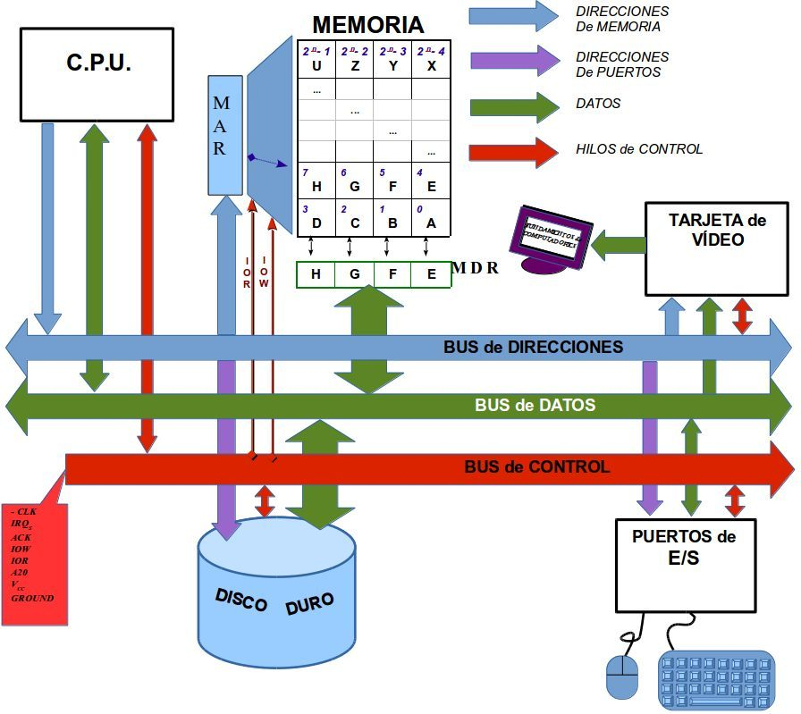
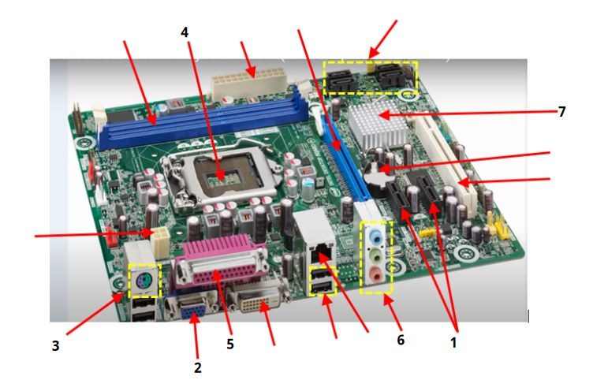
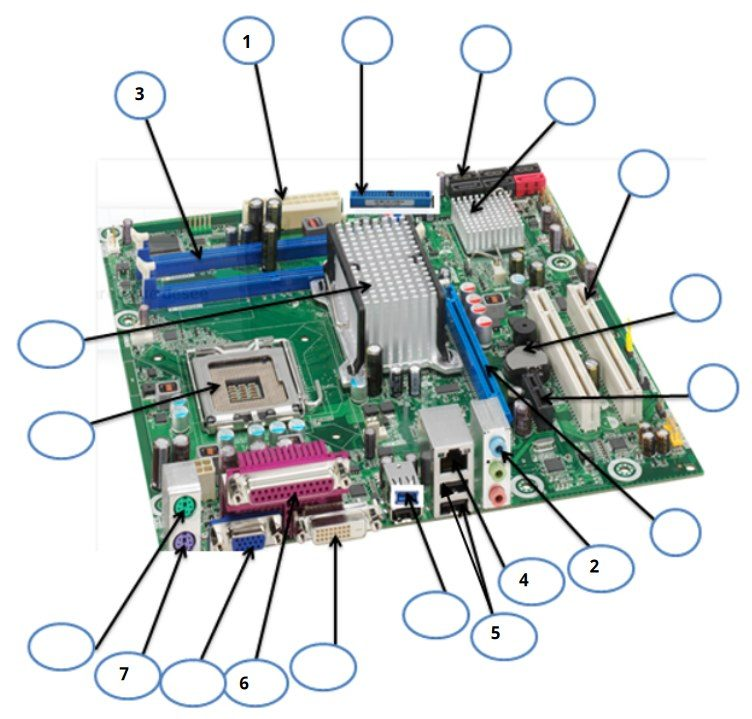

Fundamentos de Computadores · 1.º GII · Teoría
Guía de teoría 01 ⊕ ¬
Los seis temas con lo que hay que saber definir, los ejemplos resueltos tipo examen y las trampas del test. Cada apartado tiene un bloque «Más a fondo» con la explicación completa de los apuntes, más ejemplos paso a paso y las fotos de la tarea. Al final tienes un formulario para repasar.
Tema 1
Introducción
Qué es un computador, cómo se conectan sus partes, cómo se mide su rendimiento, la placa base y un poco de historia.
1.1Niveles del computador y Von Neumann
La informática es la ciencia que estudia el procesamiento automático de la información. El computador se describe por niveles, de dentro hacia fuera: hardware → sistema operativo → aplicaciones → servicios de red. Cada nivel se apoya en el inferior y le oculta sus detalles al superior. La asignatura recorre esos niveles: hardware y datos (temas 1–3), SO (tema 4), lenguajes (tema 5) y redes (tema 6).
Un computador es una máquina electrónica que procesa información siguiendo las instrucciones de un programa. Todo (programas, datos y resultados) está en binario: hay que codificar al entrar y decodificar al salir.
Esquema de Von Neumann (3 bloques)
- CPU = unidad de control (lee las instrucciones de memoria, las decodifica y genera las señales de control) + camino de datos (ALU y registros: hace las operaciones).
- Memoria principal: guarda instrucciones y datos (programa almacenado).
- Entrada/Salida: teclado, monitor, almacenamiento…
Ojo en el test
El esquema de Von Neumann no está en desuso: es una visión de alto nivel de la arquitectura, válida hoy. No describe el interior del microprocesador.
Más a fondo · de los apuntes
Cada nivel se apoya en el de debajo y le oculta sus detalles al de arriba: quien escribe un procesador de textos no sabe cómo se mueve el cabezal del disco, porque de eso se encarga el sistema operativo; y el sistema operativo no necesita saber qué hace el procesador de textos con el texto.
Por qué todo es binario
Toda la información (programas, datos y resultados) está en forma digital binaria. Por eso, antes de procesar algo hay que codificarlo (por ejemplo, la tecla «A» se convierte en 1000001) y al terminar hay que decodificar el resultado para mostrárselo a una persona (los bits de un píxel se convierten en un color en la pantalla).
Cómo trabajan juntos los tres bloques de Von Neumann
- La unidad de control pide a la memoria la siguiente instrucción (por ejemplo, «sumar dos registros»).
- La decodifica con circuitos decodificadores (tema 3) y genera las señales de control que gobiernan al resto.
- El camino de datos (ALU y registros) lee los operandos, hace la operación y escribe el resultado.
- Se vuelve a empezar con la instrucción siguiente.
La idea clave es el programa almacenado: instrucciones y datos están en la misma memoria principal y la CPU trae ambos por los mismos buses. Al esquema de las transparencias le faltan por dibujar los módulos de E/S, que también se conectan a los buses.
1.2Buses y operaciones con memoria
Un bus es un conjunto de hilos paralelos; cada hilo transmite 1 bit a la vez. Su ancho es el número de hilos.
| Bus | Qué transporta | Qué determina su ancho |
|---|---|---|
| Direcciones | La dirección de la celda (o puerto de E/S). Lo pone la CPU: unidireccional. | La memoria máxima: n hilos → 2n celdas de 1 byte. |
| Datos | El contenido que se lee o escribe. Bidireccional. | Los bytes por operación → la velocidad CPU‑RAM. |
| Control | IOR (leer), IOW (escribir), CLK, IRQ, ACK, Vcc, GND… | — |
| Lectura | Escritura |
|---|---|
| 1. La CPU pone la dirección en el bus de direcciones. | 1. La CPU pone la dirección y el dato. |
| 2. Activa IOR (bus de control). | 2. Activa IOW. |
| 3. La memoria deja el contenido en el bus de datos. | 3. La memoria escribe el dato. |
La memoria es un conjunto de celdas de 1 byte, cada una con su dirección (dónde) y su contenido (qué). Para la memoria, datos e instrucciones son sólo bits.
Jerarquía de memoria, de más rápida (y pequeña y cara) a más lenta: registros → caché → RAM → disco. La caché guarda copias de lo usado recientemente; la RAM guarda instrucciones y datos.
Preguntas típicas
- Una lectura (y una escritura) usa los tres buses.
- 64 bits de direcciones → 264 celdas de 1 byte (no 64 celdas, ni celdas de 64 bits).
- «Arquitectura de 32 bits de direccionamiento» = bus de direcciones de 32 bits.
- Usar little o big endian no cambia el bus de direcciones.
Más a fondo · de los apuntes

Leer el dibujo paso a paso
- Las flechas azules (direcciones) salen de la CPU y llegan a la memoria por el MAR: la memoria guarda ahí la dirección que le han pedido. Van en un solo sentido.
- Las flechas verdes (datos) tienen punta en los dos extremos: el dato puede ir de la CPU a la memoria (escritura) o al revés (lectura). Entra y sale de la memoria por el MDR.
- Las flechas rojas (control) llevan señales sueltas: IOR (quiero leer), IOW (quiero escribir), el reloj CLK, las peticiones de interrupción IRQ, el reconocimiento ACK, la alimentación Vcc y la masa GROUND.
- Las flechas moradas son direcciones de puertos de E/S: el teclado, el ratón o la tarjeta de vídeo también tienen una «dirección» para que la CPU les hable.
Ejemplo: ¿cuántas celdas direcciona un bus?
Cada hilo es un bit de la dirección. Con n hilos hay 2n combinaciones distintas, es decir, 2n direcciones. Como cada dirección corresponde a una celda de 1 byte, la memoria máxima es 2n bytes.
16 hilos → 216 = 65 536 bytes = 64 KB · 32 hilos → 232 bytes = 4 GB · 64 hilos → 264 bytes = 16 EB.
Una lectura puede devolver varias celdas contiguas de golpe (por ejemplo, 4 bytes de un entero): cuántas depende del ancho del bus de datos, y por eso ese bus influye en la velocidad pero no en el tamaño máximo de la memoria.
1.3Hardware, software, firmware y SO
| Concepto | Qué es |
|---|---|
| Hardware | Parte material: componentes eléctricos, electrónicos y mecánicos. |
| Software | Programas, instrucciones y reglas; intangible e inherentemente modificable. |
| Firmware | Software de bajo nivel en memoria programable (flash), modificable de forma esporádica. Ej.: BIOS/UEFI. |
El sistema operativo gestiona los recursos en beneficio de los programas: es el primer programa en funcionar (tras el firmware) y los demás corren sobre él. Junto al compilador y el ensamblador forma los programas de sistema. Las aplicaciones (procesador de textos, hoja de cálculo, navegador…) son para el usuario. Los servicios de red (web, correo, chat…) se obtienen a través de Internet.
Ojo
El firmware sí se puede modificar (actualizar la BIOS) y no impide el overclocking: se configura precisamente desde la BIOS/UEFI.
Más a fondo · de los apuntes
Los tres conceptos con más detalle
- Hardware (definición de la RAE: «conjunto de los componentes que integran la parte material de una computadora»). Incluye componentes eléctricos (fuente de alimentación, condensadores, cables, resistencias), electrónicos (procesador, memoria, tarjetas de E/S) y mecánicos (discos duros, unidades ópticas). Es lo más «estático».
- Software (RAE: «conjunto de programas, instrucciones y reglas informáticas para ejecutar ciertas tareas»). Es intangible: son datos e instrucciones que dicen al computador qué hacer, aunque físicamente estén guardados en hardware (RAM, discos). Se puede cambiar con facilidad.
- Firmware: software de bajo nivel guardado de forma semipermanente en memorias programables electrónicamente. Se puede cambiar, pero de forma esporádica y no tan fácilmente como el software normal: está «a caballo» entre los dos. Ejemplo típico: la BIOS/UEFI de la placa base.
Programas de sistema frente a aplicaciones
Los programas de sistema están orientados a los programadores: el sistema operativo, el compilador y el ensamblador (estos dos traducen lo escrito en un lenguaje de alto nivel a instrucciones simples que el hardware ejecuta; tema 5). Las aplicaciones están orientadas a los usuarios:
| Aplicación | Para qué sirve |
|---|---|
| Procesador de textos | Crear y modificar documentos: márgenes, tabuladores, justificación, tipos de letra, buscar y sustituir, ortografía… |
| Hoja de cálculo | Datos numéricos y alfanuméricos en tabla, con fórmulas, funciones y gráficas. |
| Navegador web | Ver páginas web, interactuar con ellas y navegar mediante enlaces (hipervínculos). |
| Reproductor de medios | Sonido, vídeo e imágenes. |
Hoy el computador no está aislado: Internet es un conjunto descentralizado de redes interconectadas con protocolos estandarizados, de modo que redes físicas muy distintas funcionan como una única red lógica mundial. Servicios: web, correo, transferencia de archivos, chat, mensajería, acceso remoto, juegos en línea…
1.4Codificación, endianness y unidades
Se usan 2 valores porque distinguir dos estados es lo más fácil (tensión alta/baja, magnetización, luz…). Con n bits hay 2n combinaciones; un byte (8 bits) codifica 256.
| Little endian | Big endian |
|---|---|
| Byte menos significativo en la dirección más baja. En el editor hexadecimal se ve «al revés». Lo usa Intel x86. | Byte más significativo en la dirección más baja: se lee en el orden natural. |
| Dato de k bytes en D: MSB en D + k − 1, LSB en D. | MSB en D, LSB en D + k − 1. |
Ejemplo resuelto
Bytes 00 01 02 03 desde 0x00: en little endian valen 0x03020100; en big endian, 0x00010203.
Variable de 8 bytes en 0x8AA46A23, little endian → MSB en 0x8AA46A23 + 7 = 0x8AA46A2A (en hex 3 + 7 = A, ¡no 30!).
| Unidad | Bytes | ≈ |
|---|---|---|
| 1 KB | 210 = 1024 | 103 |
| 1 MB | 220 | 106 |
| 1 GB | 230 | 109 |
| 1 TB | 240 | 1012 |
| 1 PB / 1 EB | 250 / 260 | 1015 / 1018 |
B mayúscula = byte; b minúscula = bit: 3 Mb/s = 3/8 ≈ 0,375 MB/s.
Ejemplos tipo tarea
- Bits para 64 KB: 26·210 = 216 → 16 bits (n = log2 nº de bytes).
- Un bus de 32 bits direcciona 232 = 22·230 = 4 GB.
- Bloques de 1 KB en 2 MB: 2·220 / 210 = 2048.
Más a fondo · de los apuntes
Por qué dos valores
Distinguir dos estados es lo más fácil de almacenar y de tratar en hardware, y hay muchas formas físicas de hacerlo: tensión alta o baja en un circuito, superficie magnetizada en un sentido u otro (disco duro), superficie agujereada o no (CD/DVD), señal de alta o baja frecuencia (cable de red), presencia o ausencia de luz (fibra óptica).
Endianness: cómo resolver cualquier ejercicio
- Una variable de k bytes guardada a partir de la dirección D ocupa las direcciones D, D+1, …, D+k−1.
- Little endian («el pequeño primero»): el byte menos significativo va en D y el más significativo en D+k−1.
- Big endian («el grande primero»): el byte más significativo va en D y el menos significativo en D+k−1.
- Las sumas de direcciones se hacen en hexadecimal.
Los tres ejemplos de la tarea
- 4 bytes en 0x3000, little endian → MSB en 0x3000 + 3 = 0x3003.
- 8 bytes en 0x8AA46A23, little endian → MSB en 0x8AA46A23 + 7 = 0x8AA46A2A (3 + 7 = 10 = A en hexadecimal).
- 4 bytes en 0x7013F8C6, big endian → el MSB está en la dirección inicial: 0x7013F8C6.
En un editor hexadecimal las direcciones crecen hacia la derecha. Por eso, en little endian el número aparece «al revés» byte a byte (el entero 0x12345678 se ve como 78 56 34 12) y en big endian se lee en el orden natural en que lo escribimos.
Unidades: valores exactos
| Unidad | Potencia | Valor exacto | Aproximación |
|---|---|---|---|
| 1 KB | 210 | 1 024 bytes | ≈ 103 |
| 1 MB | 220 | 1 048 576 bytes | ≈ 106 |
| 1 GB | 230 | 1 073 741 824 bytes | ≈ 109 |
| 1 TB / PB / EB | 240 / 250 / 260 | — | ≈ 1012 / 1015 / 1018 |
Truco para los ejercicios: escribe todo como potencias de 2 y resta exponentes. «¿Cuántos bloques de 1 KB caben en 2 MB?» → 2·220 / 210 = 21+20−10 = 211 = 2048.
1.5Rendimiento y ancho de banda
Tiempo de ejecución: todo lo que tarda la tarea (disco, memoria, E/S…). Tiempo de CPU: sólo el que el procesador pasa calculando.
TCPU = Ninstr × CPI / f = Ninstr × CPI × Tciclo
Aumenta con el CPI y con N; disminuye con f. No depende del bus de direcciones. Despejes: CPI = T·f / N; f = N·CPI / T.
Ejemplos resueltos
- 40 MHz, 100·106 instrucciones, CPI 3,6: T = 360·106 / 40·106 = 9 s (a 4 GHz, 0,09 s).
- 4·106 instr., 3,2 MHz, T = 5 s → CPI = 5 × 3,2·106 / 4·106 = 4.
- T = 10 s, N = 108, CPI 3 → f = 3·108/10 = 30 MHz.
- Truco: pasa MHz/GHz a Hz y «millones» a potencias de 10 antes de operar.
Ancho de banda = fbus × ancho del bus · ttransmisión = tamaño / AB
Ejemplo
Bus de 32 bits a 10 MHz: 32 × 107 = 320 Mbit/s = 40 MB/s. Enviar 800 MB: 800/40 = 20 s.
Más a fondo · de los apuntes
De dónde sale la fórmula del tiempo de CPU
El programa ejecuta N instrucciones; cada una tarda, de media, CPI ciclos de reloj; y cada ciclo dura Tciclo = 1/f segundos. Multiplicando: segundos = instrucciones × (ciclos / instrucción) × (segundos / ciclo). De ahí también los despejes: si te dan tres de las cuatro magnitudes, puedes sacar la cuarta.
Los cuatro ejemplos de los apuntes
- T con 40 MHz, 100·106 instrucciones y CPI 3,6: T = 100·106 × 3,6 / 40·106 = 360/40 = 9 s. Con f = 4 GHz: 100·106 × 3,6 / 4·109 = 0,09 s = 90 ms.
- CPI con 4·106 instrucciones, 3,2 MHz y T = 5 s: CPI = T·f / N = 5 × 3,2·106 / 4·106 = 4.
- f con T = 10 s, N = 100·106, CPI = 3: f = N·CPI / T = 3·108 / 10 = 3·107 Hz = 30 MHz.
- T con N = 4·106, CPI = 5, f = 200 kHz: T = 2·107 / 2·105 = 100 s.
Ancho de banda paso a paso
En cada ciclo del bus viaja un bit por cada hilo, así que en un segundo viajan f × ancho bits. Para pasar a bytes se divide entre 8.
- Bus de 64 bits a 10 MHz: 64 × 107 = 640 Mbit/s = 80 MB/s.
- Bus de 8 bits a 100 GHz (1 bit por ciclo e hilo): 8 × 1011 = 800 Gbit/s.
- Enlace que envía 10 MB en 0,0008 s: 10 / 0,0008 = 12 500 MB/s.
Errores típicos
No pasar MHz/GHz a Hz antes de operar (1 MHz = 106 Hz, 1 GHz = 109 Hz), confundir b (bit) con B (byte) y olvidar dividir entre 8 al pasar de bits/s a bytes/s.
1.6La placa base
Placa de circuito impreso principal: conecta CPU, memoria, tarjetas, almacenamiento y periféricos mediante buses y reparte la alimentación. Sigue un factor de forma (ATX, micro‑ATX, mini‑ITX).
| Componente | Función | Cómo reconocerlo |
|---|---|---|
| Zócalo (socket) | Conecta la CPU (y su disipador) con la placa. | Cuadrado grande con palanca. LGA (pines en placa) / PGA. |
| Ranuras DIMM | Módulos de RAM (DDR…DDR5). | Largas y estrechas, con pestañas; por parejas de color (doble canal). |
| Puente norte | Alta velocidad: CPU ↔ RAM y gráfica (PCIe x16). | Chip con disipador grande junto a la CPU. Hoy integrado en la CPU. |
| Puente sur | E/S lenta: SATA, USB, audio, red, PCI, BIOS. | Chip más alejado, disipador pequeño (en Intel, PCH). |
| BIOS/UEFI | Firmware: POST, configuración, arranque del SO. | Chip pequeño. |
| Pila CR2032 | Mantiene la CMOS (configuración) y el reloj apagado: «alimentación de la BIOS». | Pila de botón plateada. |
| ATX 24 pines | Alimentación principal de la placa. | Conector blanco grande en el borde. |
| ATX12V/EPS 4–8 pines | Alimenta los reguladores (VRM) de la CPU. | Pequeño, cerca del socket. |
| PCIe x16 | Máximo ancho de banda: tarjeta gráfica. | Ranura larga con pestaña, la más cercana a la CPU. |
| PCIe x1 | Periféricos con poco ancho de banda. | Ranuras muy cortas. |
| PCI | Bus paralelo de 32 bits para periféricos antiguos. | Medianas, blancas. |
| SATA | Discos, SSD y ópticas con bus serie. | Conector en «L» de 7 pines. |
| IDE/PATA | Discos antiguos con bus paralelo. | Largo de 40 pines (cable plano). |
| Panel trasero | Función / aspecto |
|---|---|
| PS/2 | Teclado (morado) o ratón (verde) no USB. |
| USB | Periféricos alimentados por el puerto; 2.0 negro, 3.0 azul. |
| VGA | Vídeo analógico, 15 pines en 3 filas, azul. |
| DVI / HDMI / DP | Vídeo digital (HDMI y DP con audio). |
| Paralelo (LPT) | Impresoras antiguas, 25 agujeros, rosa. |
| Serie (COM) | Periféricos antiguos, 9 pines. |
| RJ‑45 | Red Ethernet, con LEDs. |
| Jacks 3,5 mm | Audio: verde salida, rosa micro, azul línea. |
Para el examen
Te dan una placa con flechas y una tabla de funciones con números romanos: reconoce cada pieza por forma y color y busca su frase. No confundas las PCIe x1 (negras, cortas) con los SATA (en «L»).
Más a fondo · de los apuntes
Los ejercicios de la tarea con foto
En el examen te dan una foto con flechas numeradas y una tabla de funciones con números romanos. Identifica cada componente por su forma y color (tabla de arriba) y busca la frase que describe su función: las frases de la columna «Función» usan las mismas palabras que la tarea.

| Nº | Componente | Código |
|---|---|---|
| 1 | Ranuras PCI Express x1 (las dos negras cortas) | VIII |
| 2 | Conector VGA (vídeo analógico) | II |
| 3 | Conector PS/2 (teclado/ratón no USB) | I |
| 4 | Zócalo del microprocesador | XV |
| 5 | Puerto paralelo (impresoras) | III |
| 6 | Jacks de audio analógico | VII |
| 7 | Disipador del chipset (controla periféricos) | XI |
Resto de flechas de esta placa: conectores SATA en el recuadro amarillo superior (XII), ranuras RAM (XVI), conector ATX de 24 pines (XIV), ranura PCIe x16 azul (XIII), pila de la BIOS (X), ranura PCI blanca (IX), conector de 4 pines de la CPU (XVII), DVI (IV), USB (V) y RJ‑45 (VI). Cuidado con no confundir las ranuras PCIe x1 (negras, cortas) con los conectores SATA (en «L»).

| Nº | Componente | Código |
|---|---|---|
| 1 | Conector de alimentación principal ATX | II |
| 2 | Jacks de audio analógico | X |
| 3 | Ranuras de memoria RAM | I |
| 4 | Puerto de red Ethernet (RJ‑45) | XI |
| 5 | Puertos USB | XII |
| 6 | Puerto paralelo | XV |
| 7 | Puerto PS/2 morado (teclado) | XVII |
En esta placa, más antigua, se ven los dos chips del chipset: el disipador grande junto a la CPU es el puente norte (XX: controla RAM y gráficas) y el pequeño es el puente sur (V: periféricos). También hay un conector IDE azul (III), SATA (IV), PCIe x16 (IX), PCIe x1 negra pequeña (VIII), PCI blancas (VI), pila (VII), USB 3.0 azul (XIII), VGA (XVI), DVI (XIV), PS/2 verde de ratón (XVIII) y el socket (XIX).
Placas actuales
Las funciones del puente norte (controlador de memoria y PCIe x16) se han integrado dentro de la CPU; el chip que queda hace de puente sur (en Intel se llama PCH). Por eso en una placa moderna ves un solo chip con disipador. PCI Express es un bus serie organizado en carriles: x1, x4, x16 indica cuántos carriles tiene la ranura.
1.7Overclocking
Hacer funcionar un componente (CPU, GPU, RAM) por encima de su frecuencia nominal. fCPU = reloj base (BCLK) × multiplicador: 100 MHz × 42 = 4,2 GHz. Se sube el multiplicador (CPU desbloqueada) o el BCLK desde la BIOS/UEFI, y suele hacer falta subir el voltaje (Vcore).
- Ventaja: menos tiempo de CPU (sólo la parte de cálculo).
- Riesgos: más calor y consumo (P ∝ V²·f), menor vida útil, inestabilidad, pérdida de garantía.
- Depende totalmente de la refrigeración; si se calienta, la CPU baja sola la frecuencia (thermal throttling).
Test de la tarea
V: puede disminuir la vida de la CPU al subir su temperatura. F: que se haga sobre el northbridge, que afecte principalmente al firmware, que sea independiente de la refrigeración o que el firmware lo impida.
Más a fondo · de los apuntes
Por qué calienta tanto
La potencia que disipa la CPU crece aproximadamente como P ∝ V²·f. Subir la frecuencia ya aumenta el calor, pero lo que más pesa es el voltaje, porque va al cuadrado: subir el Vcore un 10 % aumenta la potencia en torno a un 21 % (1,1² = 1,21) aunque la frecuencia no cambie. Ese calor extra es lo que acorta la vida útil y lo que obliga a tener buen disipador, buena fuente y buenos reguladores de voltaje en la placa.
Lo contrario es el underclocking/undervolting: bajar frecuencia o voltaje para consumir y calentar menos. Los modos «turbo» de las CPU actuales son una subida automática de frecuencia, pero dentro de los márgenes del fabricante, así que no son overclocking.
Ojo con «sólo mejora la parte de cálculo»
Más frecuencia reduce el tiempo de CPU (T = N·CPI/f), pero no acelera los accesos a disco ni a la red. Si un programa pasa la mayor parte del tiempo esperando al disco, el overclocking apenas se nota.
1.8Historia
| Generación | Tecnología | Hitos |
|---|---|---|
| 1.ª (1943–62) | Válvulas de vacío | ENIAC: primer computador electrónico programable (18 000 válvulas, se programaba cableando). EDVAC (Von Neumann): programa almacenado. |
| 2.ª (1962–67) | Transistor (1947, Bell) | IBM System/360 (1964): concepto de ISA. PDP-8: primer minicomputador. |
| 3.ª (1967–78) | Circuito integrado | Microprogramación; CDC 6600 (Cray): primer supercomputador; caché (Wilkes; IBM 360/85). |
| 4.ª (1971– ) | Microprocesador | Intel 4004 (1971, 2300 transistores); Apple II; IBM PC (8088); Pentium 4. |
Babbage: máquina de diferencias y analítica. Ada Lovelace: primer algoritmo, primera programadora. Top Secret Rosies: programadoras del ENIAC. Klára von Neumann: programó ENIAC en binario y la primera predicción meteorológica. Hedy Lamarr: salto de frecuencia (base de WiFi, Bluetooth). Margaret Hamilton: software del Apollo, «ingeniería del software». Dorothy Vaughan: supervisora en la NACA/NASA, Fortran.
Hoy: PC, servidores y empotrados. Desde 2005 todos los procesadores son multinúcleo (más rendimiento sin subir la frecuencia, ahorro de energía), pero son más difíciles de programar.
Más a fondo · de los apuntes
Antes de los computadores electrónicos
La Revolución industrial (s. XIX) aumentó la producción gracias a las máquinas, pero eran de propósito específico (cableadas para una sola tarea). Charles Babbage (1791–1871) diseñó la máquina de diferencias (1832; 25 000 piezas, coste 17 470 £), una calculadora mecánica, e intentó construir la máquina analítica, capaz de resolver distintos problemas (no se terminó). Ada Lovelace (1815–1852) escribió para ella el primer algoritmo de la historia; el lenguaje Ada lleva su nombre.
Las generaciones con sus datos
| Generación | Datos que se preguntan |
|---|---|
| 1.ª (1943–1962) · válvulas de vacío (Fleming; cada una almacena 1 bit) | ENIAC (Eckert y Mauchly, 1943–46): 30 t, 170 m², 18 000 válvulas, 0,1 MHz, 20 registros de 10 dígitos decimales, 1900 sumas/s, se programaba cableando. EDVAC (Von Neumann, 1952): primera máquina de programa almacenado, con saltos condicionales. También BINAC (1949) y UNIVAC I (1951). |
| 2.ª (1962–1967) · transistor (1947, laboratorios Bell) | IBM System/360 (1964): concepto de ISA, una familia de máquinas compatibles. PDP‑8 de DEC (1965): primer minicomputador (unos 20 000 $). |
| 3.ª (1967–1978) · circuito integrado (1958: varios elementos en un bloque de silicio) | Microprogramación (Wilkes, años 50). Primer supercomputador: CDC 6600 (1964, Seymour Cray). Wilkes propone la memoria caché en 1965 (IBM 360/85, 1968). Cray‑1 (1976). |
| 4.ª (1971– ) · microprocesador | Intel 4004 (1971): primer microprocesador, 2300 transistores, ≈1 MHz (exactamente 740 kHz). Apple II (1977). IBM PC (1981) con el 8088: informática de consumo masiva. Pentium 4 (2000): 55 millones de transistores, 2,8 GHz. |
Erratas de las transparencias: donde pone «CDC 6000» debe ser CDC 6600, y donde pone «IBM 360/80», el primer modelo comercial con caché fue el IBM System/360 modelo 85.
Situación actual: tres grandes grupos
- Ordenadores personales (PC, portátiles, tabletas): uso individual, buen rendimiento a bajo coste.
- Servidores: para muchos usuarios; buscan fiabilidad y escalabilidad. De clase baja (ficheros, impresión, web sencillos), media (centros de datos) y alta (supercomputadores: predicción del tiempo, clima, terremotos).
- Empotrados (embebidos): ejecutan una sola aplicación con fuertes límites de coste, consumo y fiabilidad (coches, gadgets, IoT).
Motivos del multinúcleo (desde 2005): ahorrar energía, reducir el tiempo de verificación del procesador, mejorar la fiabilidad del diseño y seguir mejorando el rendimiento sin subir la frecuencia. El precio: hay que programar en paralelo.
Tema 2
Representación de la información
Cómo se guardan en bits los números enteros y reales, los caracteres y las imágenes.
2.1Sistemas posicionales y cambios de base
En base b cada cifra vale cifra × bposición: N = … + n1·b + n0 + n−1·b−1 + … Con n bits hay 2n números (con 4 bits, 0…15). Notación: 11101)2 = 29)10.
Binario → decimal
Suma de potencias: 10100)2 = 16 + 4 = 20; 0,101)2 = 0,5 + 0,125 = 0,625.
Decimal → binario
- Parte entera: dividir entre 2 sucesivamente; los restos y el último cociente, leídos de abajo arriba.
- Parte fraccionaria: multiplicar por 2 sucesivamente; las partes enteras que salen, en orden.
Ejemplo: 77,1875 a binario
77 → 38 r1, 19 r0, 9 r1, 4 r1, 2 r0, 1 r0 → 1001101. 0,1875 → 0,375 (0), 0,75 (0), 1,5 (1), 1,0 (1) → 0,0011. Resultado 1001101,0011)2.
Fracciones que no terminan
0,1)10 = 0,000110011…)2 (periódico). Hay que cortar y eso introduce error: por eso 0,1 no es exacto en IEEE 754.
Más a fondo · de los apuntes
Decimal → binario con las tablas completas: 77,1875
| División | Cociente | Resto |
|---|---|---|
| 77 / 2 | 38 | 1 ← LSB |
| 38 / 2 | 19 | 0 |
| 19 / 2 | 9 | 1 |
| 9 / 2 | 4 | 1 |
| 4 / 2 | 2 | 0 |
| 2 / 2 | 1 ← MSB | 0 |
| Operación | Resultado | Bit |
|---|---|---|
| 0,1875 × 2 | 0,375 | 0 |
| 0,375 × 2 | 0,75 | 0 |
| 0,75 × 2 | 1,5 | 1 |
| 0,5 × 2 | 1,0 | 1 (fracción 0: fin) |
- Parte entera: se lee desde el último cociente hacia arriba por los restos: 1 0 0 1 1 0 1 → 77 = 1001101 (comprobación: 64 + 8 + 4 + 1).
- Parte fraccionaria: cuando el resultado pasa de 1 se apunta un 1 y se sigue sólo con la parte decimal. Los bits se leen de arriba abajo: 0,1875 = 0,0011 (= 1/8 + 1/16).
- Resultado: 77,1875)10 = 1001101,0011)2. El mismo método vale para cualquier base: se divide y multiplica por 8 o por 16.
0,1 en binario, multiplicación a multiplicación
0,1 × 2 = 0,2 → 0 · 0,4 → 0 · 0,8 → 0 · 1,6 → 1 · 1,2 → 1 · 0,4 → 0 · 0,8 → 0 · 1,6 → 1 … El 0,4 vuelve a salir, así que el patrón 0011 se repite para siempre: 0,1)10 = 0,000110011…)2. Hay que cortar en algún bit y eso introduce un error de representación. Lo mismo pasa con 0,33 en octal o hexadecimal.
Memoriza las potencias de 2: 1, 2, 4, 8, 16, 32, 64, 128, 256, 512, 1024 y las negativas 0,5 · 0,25 · 0,125 · 0,0625 · 0,03125. Con ellas pasar de binario a decimal es sólo sumar.
2.2Aritmética y lógica binaria
| Suma | Resta | Producto |
|---|---|---|
| 0+0=0 · 0+1=1 · 1+1=0 y llevo 1 | 0−1 = 1 y debo 1 | como en decimal, sumando desplazados |
Ejemplos: 1011101 + 1000101 = 10100010 (93 + 69 = 162); 1011101 − 1000111 = 0010110 (93 − 71 = 22); 1101010 × 101 = 1000010010 (106 × 5 = 530). Comprueba siempre en decimal.
Desplazar k posiciones a la izquierda multiplica por 2k; a la derecha, divide.
Operaciones lógicas bit a bit, sin acarreos: 1100 AND 1010 = 1000; OR = 1110; NOT 1100 = 0011. En lógica 1 + 1 = 1; en aritmética 1 + 1 = 10.
Más a fondo · de los apuntes
Las cuatro tablas
| Suma | Resta | Producto | División |
|---|---|---|---|
| 0 + 0 = 0 | 0 − 0 = 0 | 0 · 0 = 0 | 0 / 0 indeterminado |
| 0 + 1 = 1 | 0 − 1 = 1 y debo 1 | 0 · 1 = 0 | 0 / 1 = 0 |
| 1 + 0 = 1 | 1 − 0 = 1 | 1 · 0 = 0 | 1 / 0 = ∞ |
| 1 + 1 = 0 y llevo 1 | 1 − 1 = 0 | 1 · 1 = 1 | 1 / 1 = 1 |
Las operaciones de las transparencias, en columna
Suma (93 + 69)
1011101
+ 1000101
---------
10100010 (162)Resta (93 − 71)
1011101
− 1000111
---------
0010110 (22)Producto (106 × 5)
1101010
× 101
-----------
1101010
0000000
1101010
-----------
1000010010 (530)- Suma: columna a columna desde la derecha; cuando salen dos unos se escribe 0 y «me llevo 1» a la columna siguiente (y si se juntan tres unos, 1 y me llevo 1).
- Resta: 0 − 1 no se puede, así que se escribe 1 y se «debe» 1 a la columna de la izquierda, igual que en decimal.
- Producto: como en decimal, pero cada fila parcial es el multiplicando (si el bit del multiplicador es 1) o ceros (si es 0), desplazada una posición más a la izquierda.
- División: 1101,01 / 101 (13,25 / 5) = 10,1010011… (= 2,65). Se resta el divisor cada vez que «cabe», como en la división decimal.
Comprueba siempre pasando a decimal: 93 + 69 = 162 = 128 + 32 + 2 ✓; 93 − 71 = 22 = 16 + 4 + 2 ✓; 106 × 5 = 530 = 512 + 16 + 2 ✓.
Desplazamientos: 1101010 × 10)2 = 11010100 (106 × 2 = 212); 1101010 / 10)2 = 110101 (106 / 2 = 53). Multiplicar o dividir por la base es mover la coma.
2.3Enteros: SM, sesgada y C2
| Representación | Cómo se forma | Rango con n bits | Doble 0 |
|---|---|---|---|
| Sin signo | Binario natural | 0 … 2n−1 | — |
| Signo y magnitud | Bit de signo + valor absoluto | −(2n−1−1) … 2n−1−1 | Sí |
| Sesgada (S = 2n−1) | Se guarda valor + S | −2n−1 … 2n−1−1 | No |
| Complemento a 2 | Positivos en binario; negativos: invertir y sumar 1 | −2n−1 … 2n−1−1 | No |
Con 8 bits: +7 = 00000111 en todas. −8: SM 10001000; sesgada (−8 + 128 = 120) 01111000; C2 11111000.
Complemento a 2
- Opuesto: invertir todos los bits y sumar 1. C2(C2(N)) = N.
- Leer un negativo: hacer su C2, o usar pesos: el bit de más peso vale −2n−1. 11110110 = −128 + 64 + 32 + 16 + 4 + 2 = −10.
- Sirve para restar sumando: A − B = A + C2(B), despreciando el acarreo final → basta un sumador.
- Extensión de signo: para pasar a más bits se repite el bit de signo (11111000 → 11111111 11111000).
Desbordamiento
Sólo hay overflow si se suman dos números del mismo signo y el resultado sale de signo contrario. 62 + 100 con 8 bits: 00111110 + 01100100 = 10100010 (−94, absurdo). Con signos distintos nunca hay overflow.
Ejemplos en C2 (4 bits)
4 + (−7) = 0100 + 1001 = 1101 → C2 = 0011 → −3. 7 − 7 = 0111 + 1001 = 1 0000 → despreciando el acarreo, 0.
Más a fondo · de los apuntes
Cómo se forma cada representación (8 bits)
- Sin signo: el valor en binario natural. 0 = 00000000, 5 = 00000101, 247 = 11110111; rango 0 … 255.
- Signo y magnitud: el primer bit es el signo (0 positivo, 1 negativo) y los otros 7 el valor absoluto. +7 = 00000111, −8 = 10001000. Tiene dos ceros: +0 = 00000000 y −0 = 10000000, por eso su rango es −127 … +127.
- Sesgada (exceso S = 128): se suma S para que todo sea ≥ 0 y se guarda en binario natural. +7 → 135 = 10000111; −8 → 120 = 01111000. Para leer: valor = binario − S.
- C2: positivos igual que sin signo; negativos, «invertir y sumar 1». −8: +8 = 00001000 → 11110111 → +1 = 11111000.
Por qué funciona el complemento a 2
Con n bits las sumas se hacen «módulo 2n»: el acarreo que se sale por la izquierda se pierde. En C2, −N se guarda como 2n − N; por eso A + (−B) = A + 2n − B, y al despreciar el 2n (el acarreo final) queda A − B. Así la CPU resta con el mismo sumador que usa para sumar. Invertir los bits de N da 2n − 1 − N; sumando 1 se obtiene justo 2n − N.
Dos desbordamientos con 8 bits (−128 … +127)
- 62 + 100 = 162 no cabe: 00111110 + 01100100 = 10100010, que en C2 es −94. Dos positivos han dado un negativo.
- −50 − 90 = −140 tampoco: 11001110 + 10100110 = (1)01110100 = +116. Dos negativos han dado un positivo.
Regla: hay desbordamiento cuando los sumandos tienen el mismo signo y el resultado sale de signo contrario.
Tabla completa con 4 bits
| Binario | Sin signo | SM | Sesgada S = 8 | C2 |
|---|---|---|---|---|
| 0000 | 0 | +0 | −8 | 0 |
| 0001 | 1 | +1 | −7 | +1 |
| 0010 | 2 | +2 | −6 | +2 |
| 0011 | 3 | +3 | −5 | +3 |
| 0100 | 4 | +4 | −4 | +4 |
| 0101 | 5 | +5 | −3 | +5 |
| 0110 | 6 | +6 | −2 | +6 |
| 0111 | 7 | +7 | −1 | +7 |
| 1000 | 8 | −0 | 0 | −8 |
| 1001 | 9 | −1 | +1 | −7 |
| 1010 | 10 | −2 | +2 | −6 |
| 1011 | 11 | −3 | +3 | −5 |
| 1100 | 12 | −4 | +4 | −4 |
| 1101 | 13 | −5 | +5 | −3 |
| 1110 | 14 | −6 | +6 | −2 |
| 1111 | 15 | −7 | +7 | −1 |
Fíjate: la sesgada con S = 8 es el C2 con el primer bit invertido. Y en C2, sumar 1 a 0111 (+7) da 1000 (−8): por eso el rango es asimétrico (hay un negativo más que positivos).
2.4Octal y hexadecimal
Como 8 = 23 y 16 = 24, se agrupan los bits de 3 en 3 (octal) o de 4 en 4 (hex) desde la coma, rellenando con ceros.
- 010 001 101 100 , 110 100)2 = 2154,64)8
- 0100 0110 1100 , 1101)2 = 46C,D)16
- 2E74,1C)16 = 0010 1110 0111 0100 , 0001 1100)2
760,33)10 a octal y hexadecimal
Octal: 760/8 = 95 r0; 95/8 = 11 r7; 11/8 = 1 r3 → 1370; fracción 0,33×8 = 2,64 → 2; 0,64×8 = 5,12 → 5… ≈ 1370,25…)8.
Hex: 760/16 = 47 r8; 47/16 = 2 r15 (F) → 2F8; fracción 0,33×16 = 5,28 → 5; 0,28×16 = 4,48 → 4… ≈ 2F8,54…)16. Comprobación: 2·256 + 15·16 + 8 = 760.
Más a fondo · de los apuntes
El método, en cuatro reglas
- Binario → octal / hex: agrupa de 3 en 3 (octal) o de 4 en 4 (hex) empezando en la coma: hacia la izquierda en la parte entera y hacia la derecha en la fraccionaria, rellenando con ceros por los extremos. Sustituye cada grupo por su cifra.
- Octal / hex → binario: cada cifra octal son 3 bits y cada cifra hex 4 bits. 7426,03)8 = 111 100 010 110 , 000 011)2.
- Desde o hacia decimal: con la fórmula posicional (b = 8 o 16) o con divisiones y multiplicaciones sucesivas por 8 o 16.
- Entre octal y hex: lo más cómodo es pasar por binario.
El fallo más común
Agrupar la parte fraccionaria desde la derecha del número en vez de desde la coma. 0,1101)2 en hex es 0,1101 → 0,D; y 0,11)2 es 0,1100 → 0,C (se rellena con ceros a la derecha), no 0,3.
2.5Reales: IEEE 754
Coma flotante: N = M × BE. En IEEE 754 la base es 2 (implícita) y la palabra tiene tres campos: signo s | exponente sesgado e (e = E + S) | mantisa m (sólo la parte fraccionaria: el 1 de 1,m es implícito).
N = (−1)s × 1,m × 2e − S
| Formato | Bits | s | e | m | Sesgo S |
|---|---|---|---|
| Simple | 32 | 1 | 8 | 23 | 127 |
| Doble | 64 | 1 | 11 | 52 | 1023 |
Más bits de mantisa → más precisión; más bits de exponente → más rango.
C0580000)16 → decimal
- 1100 0000 0101 1000 0… → s = 1 | e = 10000000 | m = 1011000…
- E = 128 − 127 = 1; M = 1,1011)2
- N = −1,1011 × 21 = −11,011)2 = −3,375
−250,875 → IEEE 754 simple
- 250 = 11111010; 0,875 = 0,111 → 11111010,111
- Normalizar: 1,1111010111 × 27 → m = 1111010111 0…
- e = 7 + 127 = 134 = 10000110; s = 1
- 1 10000110 11110101110… = 1100 0011 0111 1010 1110 0… = C37AE000
Más: 0,75 = 1,1×2−1 → 3F400000; 42C80000 → 1,1001×26 = 100; 10,0 → 41200000; −12,625 → C14A0000.
| e | m | Significado |
|---|---|---|
| 0 | 0 | ±0 |
| 0 | ≠0 | Desnormalizado: ±0,m × 2−126 (sin 1 implícito) |
| 255 | 0 | ±∞ |
| 255 | ≠0 | NaN (p. ej. 0/0) |
| 1…254 | cualquiera | Normalizado |
Redondeo al par
La ALU mira el último bit de la mantisa y dos bits extra (redondeo y retenedor): 00/01 → truncar; 11 → sumar 1; 10 (empate) → al que termine en par (1,01100 se queda; 1,01101 → 1,01110).
A tener en cuenta
Decimales redondos pueden no ser exactos (−7,1); puede fallar la asociatividad: con a = 1, b = −1, c = 2−30, (a+b)+c = 2−30 pero a+(b+c) = 0; los errores se acumulan.
Más a fondo · de los apuntes
Por qué hace falta normalizar
Un mismo número tiene infinitas formas exponenciales: 13257,35 = 1,325735·104 = 0,1325735·105 = 1325735·10−2… (si E sube 1, M se divide entre la base). Para que cada número tenga una sola representación se fija la forma normalizada: el 1 más significativo justo en las unidades, 1,xxxx·2E, con 1 ≤ M < 2. Como ese 1 está siempre, no se guarda (bit implícito).
Ejemplos de normalización: 101,111×2−5 = 1,01111×2−3 (m = 011110…0); 0,0011×27 = 1,1×24. Cada posición que mueves la coma a la izquierda suma 1 al exponente, y a la derecha resta 1.
−12,625 → IEEE 754 simple, paso a paso
- Valor absoluto a binario: 12 = 1100; 0,625 = 0,101 → 1100,101.
- Normalizar: 1,100101 × 23 → E = 3, m = 100101 0…0 (hasta 23 bits).
- Exponente sesgado: e = 3 + 127 = 130 = 10000010.
- Signo negativo: s = 1. Palabra: 1 10000010 10010100000000000000000.
- De 4 en 4: 1100 0001 0100 1010 0000 0000 0000 0000 = C14A0000.
Los desnormalizados, con calma
Con e = 0 y m ≠ 0 el número es desnormalizado: no hay 1 implícito (M = 0,m) y el exponente es fijo, E = 0 − 126 = −126 (para ellos se usa S = 2ne−1 − 2 = 126). Sirven para representar números muy pequeños cerca de 0 (desbordamiento gradual) que no caben normalizados, porque el menor exponente normalizado es 1 − 127 = −126.
Redondeo al par: la tabla completa (nm = 5)
| Mantisa | Redondeo / retenedor | Resultado | Motivo |
|---|---|---|---|
| 1,01101 | 00 | 1,01101 | truncar (siempre) |
| 1,01101 | 01 | 1,01101 | truncar: está más cerca del de abajo |
| 1,01100 | 10 | 1,01100 | empate → truncar porque ya es par |
| 1,01101 | 10 | 1,01110 | empate → sumar 1 para que sea par |
| 1,01101 | 11 | 1,01110 | sumar 1: está más cerca del de arriba |
El bit de redondeo es el primero que no cabe (posición −nm−1) y el retenedor el siguiente. «10» significa justo la mitad: es el único caso en que se mira si el último bit es par. En el fondo, IEEE 754 intenta representar un conjunto continuo de reales con un número finito de patrones (232 o 264), y por eso los errores se acumulan en cálculos largos.
2.6Caracteres: ASCII y Unicode
Con m caracteres hacen falta n ≥ log2 m bits (10 dígitos → 4 bits). ASCII usa 7 bits (128 caracteres).
| Decimal | Hex | Contenido |
|---|---|---|
| 0–31, 127 | 00–1F, 7F | Control: LF 10, CR 13, ESC 27, DEL 127 |
| 32 | 20 | Espacio |
| 48–57 | 30–39 | «0»…«9» (dígito d = 48 + d) |
| 65–90 | 41–5A | «A»…«Z» |
| 97–122 | 61–7A | «a»…«z» (= mayúscula + 32) |
El 8.º bit del byte se usa para paridad, gráficos o extensiones de idioma (ISO 8859‑1 Latin 1; ISO 8859‑15 añade el €).
Paridad par: se añade un bit para que el total de unos sea par: «A» 1000001 → 01000001; «C» 1000011 → 11000011. Detecta errores en un nº impar de bits, pero no corrige ni detecta dos.
Unicode: todos los sistemas de escritura; code points U+0000…U+10FFFF (los 256 primeros = Latin 1). Codificaciones: UTF‑8 (1 byte para ASCII, 2–4 para el resto; el más usado) y UTF‑16 (unidades de 2 bytes; BOM FE FF big endian, FF FE little endian).
| Code points | Bytes UTF‑8 |
|---|---|
| U+0000–007F | 0xxxxxxx |
| U+0080–07FF | 110yyyyy 10xxxxxx |
| U+0800–FFFF | 1110zzzz 10yyyyyy 10xxxxxx |
| U+10000–10FFFF | 11110uuu 10uuzzzz 10yyyyyy 10xxxxxx |
Codificar en UTF‑8
ñ = U+00F1 = 000 1111 0001 → 11000011 10110001 = C3 B1 (en Latin 1, F1). € = U+20AC → E2 82 AC. A = U+0041 → 41.
Más a fondo · de los apuntes
Codificación de E/S
Las personas introducimos la información con caracteres: alfabéticos, numéricos, especiales ({ ( ) * + − ? … }) y de control (fin de línea…). Un código de E/S asigna a cada carácter una combinación de bits; la correspondencia es arbitraria, pero hay códigos normalizados. Para operar hace falta una segunda correspondencia con el binario posicional: el carácter «7» no es el número 7 (en ASCII «7» = 0110111 = 55; el número 7 = 111).
Trucos de ASCII
- Minúscula = mayúscula + 32 (sólo cambia un bit): «A» = 65 = 1000001, «a» = 97 = 1100001.
- El carácter del dígito d vale 48 + d: «7» = 55.
- LF (salto de línea) = 10, CR (retorno de carro) = 13, ESC = 27, DEL = 127.
Paridad: qué detecta y qué no
Si tras una transmisión o una lectura de disco cambia un bit, el número de unos pasa a ser impar y se detecta el error. Pero si cambian dos bits a la vez, la paridad vuelve a cuadrar y el error pasa desapercibido; y aunque se detecte, no se sabe qué bit falló, así que no se puede corregir.
Unicode con más detalle
- Las transparencias hablan de unos 110 000 caracteres de unos 100 scripts (un script es un conjunto de caracteres: alfabeto, silabario, pictogramas…); las versiones actuales superan los 150 000.
- Al principio era de 16 bits (65 536 posibilidades). Hoy define 1 114 112 code points, del 0 al 10FFFF)16. Los que no caben en 16 bits (fuera del BMP, Basic Multilingual Plane) se escriben con 5 o 6 cifras hex.
- Cada carácter tiene nombre y code point: U+0058 = «X», U+6708 = ideograma chino «yue» (月).
Codificar en UTF‑8, el método
- Mira en qué fila de la tabla cae el code point: eso dice cuántos bytes usa.
- Escribe el code point en binario con los bits que pide esa fila (rellena con ceros por la izquierda).
- Reparte los bits, de izquierda a derecha, en los huecos
y,x… de la plantilla. - Agrupa de 4 en 4 y pasa a hexadecimal.
€ = U+20AC está entre U+0800 y U+FFFF → 3 bytes: 0010 0000 1010 1100 → 11100010 10000010 10101100 = E2 82 AC. En ISO 8859‑15 el € es A4. «A» = U+0041 → UTF‑8 41 (1 byte) y UTF‑16 little endian 41 00.
2.7Imágenes
| Mapa de bits | Mapa de vectores |
|---|---|
| Matriz de píxeles con su color; resolución = ancho × alto. Sencillo y vale para fotos. | Objetos (líneas, polígonos, texto) con ecuaciones. Ocupa menos y escala sin perder calidad; peor para imágenes reales (CAD). |
| BMP, PICT, PPM, JPEG | DXF, EPS, ODG |
Color: gris (1 byte, 256 niveles); RGB aditivo, 3 bytes por píxel (224 colores), pantallas; CMYK sustractivo, impresión.
Tamaño sin comprimir
ancho × alto × bytes/píxel: RGB 1920×1080 = 6 220 800 B ≈ 5,93 MB; gris 640×480 = 307 200 B = 300 KB.
Compresión
Sin pérdida: se recupera la imagen exacta. Con pérdida (JPEG): elimina lo que el ojo apenas percibe. En una transparencia aparece al revés.
Más a fondo · de los apuntes
Mapa de bits por dentro
La imagen real tiene infinitos puntos; se divide en una matriz de píxeles (picture elements) y a cada uno se le asocia el gris o el color medio de los puntos que representa. Los atributos de los píxeles se guardan uno tras otro, de izquierda a derecha y de arriba abajo. En un mapa de vectores, en cambio, al visualizar la imagen se evalúan las ecuaciones de cada objeto y se escalan los vectores: por eso se puede ampliar sin perder calidad.
| Formato | Qué es |
|---|---|
| BMP | BitMap, aplicaciones Windows. |
| PICT | Macintosh. |
| PPM | Portable PixMap: codificación sencilla, con posibilidad de ASCII (es el de las prácticas). |
| JPEG | Joint Photographic Experts Group: buena calidad para imágenes naturales, con compresión. |
| DXF | Drawing eXchange Format, normalizado para CAD (AutoCAD, Corel Draw). |
| EPS | Encapsulated PostScript (PostScript: lenguaje de Adobe para documentos con texto y gráficos). |
| ODG | Dibujos de LibreOffice. |
Los formatos vectoriales a menudo incluyen también mapas de bits como subimágenes. Con 8 bits por color, RGB da 224 (más de 16 millones) de colores; es aditivo (los tres juntos dan blanco). CMYK (las transparencias lo escriben «CYMK») es sustractivo (los colores juntos dan negro) y se usa con tinta.
Tema 3
Circuitos combinacionales
Álgebra de Boole, simplificación con Karnaugh, puertas y bloques (decodificadores, multiplexores, ROM).
3.1Álgebra de Boole
Combinacional: la salida depende sólo de las entradas (MUX, decodificador, sumador, ROM). Secuencial: depende también del estado guardado (registros; se ve en ETC). Álgebra {{0,1}, +, ·} con NOT; una función de n variables tiene una tabla de 2n filas.
| Propiedad | Forma OR | Forma AND |
|---|---|---|
| Neutro | A + 0 = A | A · 1 = A |
| Absorbente | A + 1 = 1 | A · 0 = 0 |
| Complementario | A + A' = 1 | A · A' = 0 |
| Idempotencia | A + A = A | A · A = A |
| Distributiva | A + B·C = (A+B)·(A+C) | A·(B+C) = A·B + A·C |
| Absorción | A + A·B = A | A·(A+B) = A |
| De Morgan | (A + B)' = A'·B' | (A·B)' = A' + B' |
Formas canónicas
Minitérmino mi: producto de todas las variables que vale 1 sólo en la fila i (variable negada si vale 0). Maxitérmino Mi: suma que vale 0 sólo en la fila i (variable negada si vale 1). Ej.: con F = 1 en las filas 2, 3, 6, 7 de A,B,C → F = Σm(2,3,6,7) = ΠM(0,1,4,5) = B.
Más a fondo · de los apuntes
Minitérminos y maxitérminos con el ejemplo completo
| fila | A | B | C | F |
|---|---|---|---|---|
| 0 | 0 | 0 | 0 | 0 |
| 1 | 0 | 0 | 1 | 0 |
| 2 | 0 | 1 | 0 | 1 |
| 3 | 0 | 1 | 1 | 1 |
| 4 | 1 | 0 | 0 | 0 |
| 5 | 1 | 0 | 1 | 0 |
| 6 | 1 | 1 | 0 | 1 |
| 7 | 1 | 1 | 1 | 1 |
- Suma de productos: un producto por cada fila con F = 1, con la variable negada si vale 0 en esa fila: F = A'BC' + A'BC + ABC' + ABC = m2 + m3 + m6 + m7 = Σm(2, 3, 6, 7).
- Producto de sumas: una suma por cada fila con F = 0, con la variable negada si vale 1: F = (A+B+C)(A+B+C')(A'+B+C)(A'+B+C') = ΠM(0, 1, 4, 5).
- Comprobación con A = 0, B = 1, C = 0 (fila 2): en la suma, sólo el primer producto vale 1 → F = 1 ✓; en el producto, todas las sumas valen 1 → F = 1 ✓.
- Los índices de unos y ceros son complementarios: entre los dos cubren 0…7.
- Simplificando con el álgebra: F = A'B(C' + C) + AB(C' + C) = A'B + AB = (A' + A)B = B. Mirando la tabla se ve: F vale lo mismo que B en todas las filas.
Las leyes de De Morgan son la base para pasar a puertas NAND/NOR: el complemento de un producto es la suma de los complementos, y el de una suma, el producto de los complementos (y valen para cualquier número de variables).
3.2Mapas de Karnaugh
Tabla de verdad dibujada con filas y columnas en código Gray (00, 01, 11, 10): celdas vecinas (también por los bordes) difieren en un bit. Columnas AB, filas CD; la celda vale el índice «ABCD».
- Agrupa unos en rectángulos de 2k celdas (1, 2, 4, 8, 16): cada grupo elimina k variables.
- Grupos lo más grandes posible y el menor número de grupos; un 1 puede estar en varios.
- Empieza por los unos más aislados.
- Lectura: se eliminan las variables que cambian; las que no, sin negar si valen 1 y negadas si valen 0.
Terminología
- Implicante: producto que sólo cubre unos.
- Primo: no está contenido en otro mayor.
- Primo esencial: cubre un 1 que ningún otro primo cubre; siempre está en la solución.
- Cubierta: primos que cubren todos los unos (incluye los esenciales).
Ejemplo: F = Σm(4, 5, 6, 7, 8, 10, 11, 12)
| CD \ AB | 00 | 01 | 11 | 10 |
|---|---|---|---|---|
| 00 | 00 | 14 | 112 | 18 |
| 01 | 01 | 15 | 013 | 09 |
| 11 | 03 | 17 | 015 | 111 |
| 10 | 02 | 16 | 014 | 110 |
{4,5,6,7} = A'B · {8,12} = AC'D' · {10,11} = AB'C → F = A'B + AC'D' + AB'C.
Indiferencias: F = 1 si la cifra BCD ABCD está entre 4 y 8
| CD \ AB | 00 | 01 | 11 | 10 |
|---|---|---|---|---|
| 00 | 00 | 14 | X12 | 18 |
| 01 | 01 | 15 | X13 | 09 |
| 11 | 03 | 17 | X15 | X11 |
| 10 | 02 | 16 | X14 | X10 |
Las X (10–15 no pueden darse) se toman como 1 si ayudan: {4–7, 12–15} = B; {8,10,12,14} = AD' → F = B + AD'.
Por ceros
Agrupando los ceros se obtiene un producto de sumas: en cada grupo, las variables que no cambian aparecen negadas si valen 1 y sin negar si valen 0, sumadas.
Más a fondo · de los apuntes
Ejemplo resuelto 2 (por unos): F = Σm(2, 3, 4, 5, 7, 8, 10, 13, 15)
| CD \ AB | 00 | 01 | 11 | 10 |
|---|---|---|---|---|
| 00 | 00 | 14 | 012 | 18 |
| 01 | 01 | 15 | 113 | 09 |
| 11 | 13 | 17 | 115 | 011 |
| 10 | 12 | 06 | 014 | 110 |
- Implicantes primos (grupos que no se pueden agrandar), seis: A'B'C = {2, 3}; B'CD' = {2, 10}; AB'D' = {8, 10}; BD = {5, 7, 13, 15}; A'CD = {3, 7}; A'BC' = {4, 5}.
- Esenciales (el único que cubre algún 1): BD (único que cubre 13 y 15), A'BC' (único que cubre el 4) y AB'D' (único que cubre el 8; el grupo {8, 10} usa que la fila de arriba y la de abajo son vecinas).
- Con los esenciales quedan sin cubrir el 2 y el 3: el primo A'B'C cubre los dos a la vez, así que {2, 10} y {3, 7} sobran.
- Resultado: F = A'B'C + A'BC' + BD + AB'D'.
Ejemplo resuelto 3 (por ceros): la misma función
Los ceros son 0, 1, 6, 9, 11, 12, 14. Se agrupan igual que los unos, pero lo que se obtiene es F':
- {0, 1} = A'B'C' · {6, 14} = BCD' · {12, 14} = ABD' · {9, 11} = AB'D → F' = A'B'C' + BCD' + ABD' + AB'D.
- Negando (De Morgan) se obtiene F como producto de sumas: F = (A + B + C)(B' + C' + D)(A' + B' + D)(A' + B + D').
- Regla directa: en cada grupo de ceros se quita la variable que cambia, y las que no cambian se escriben negadas si valen 1 y sin negar si valen 0, sumadas.
Por qué funciona agrupar
Dos celdas vecinas sólo se diferencian en una variable, y por la propiedad distributiva esa variable desaparece: 1000 y 1001 son AB'C'D' + AB'C'D = AB'C'(D' + D) = AB'C'·1 = AB'C'. Un grupo de 4 repite el truco dos veces y elimina dos variables; uno de 8, tres.
3.3Puertas, NAND/NOR y retardos
| Puerta | Expresión | Tabla 00 01 10 11 | Vale 1 cuando… |
|---|---|---|---|
| AND | A·B | 0 0 0 1 | todas son 1 |
| OR | A+B | 0 1 1 1 | alguna es 1 |
| NOT | A' | — | la entrada es 0 |
| NAND | (A·B)' | 1 1 1 0 | alguna es 0 |
| NOR | (A+B)' | 1 0 0 0 | todas son 0 |
| XOR | A⊕B = A'B + AB' | 0 1 1 0 | son distintas |
| XNOR | (A⊕B)' | 1 0 0 1 | son iguales |
Una burbuja en una entrada o salida equivale a un inversor. Escalas: SSI 1–10 puertas, MSI 10–100, LSI 100–100 000, VLSI > 100 000.
NAND y NOR son universales. NOT A = NAND(A,A); AND = NAND + NAND‑inversor; OR = NAND de las entradas negadas (y simétricamente con NOR).
Implementar sólo con NAND: simplifica por unos (suma de productos), niega dos veces y aplica De Morgan → estructura NAND‑NAND. Sólo con NOR: por ceros (producto de sumas) → NOR‑NOR.
Retardo
Tiempo desde que las entradas están disponibles hasta que la salida se estabiliza. El del circuito es el del camino más lento: con NOT 5 ns, AND 10 ns, OR 10 ns y camino NOT→AND→OR, 25 ns. En cada puerta: salida lista = entrada más tardía + retardo de la puerta.
Más a fondo · de los apuntes
Puertas con símbolo normalizado IEC
Además del dibujo clásico, cada puerta tiene un símbolo IEC: un rectángulo con & (AND), ≥1 (OR), 1 (NOT) o =1 (XOR). La negación se marca con una burbuja. Cada puerta básica se construye con 4 a 6 transistores, y los avances en VLSI han permitido procesadores con más de 1 000 000 000 de transistores (el Pentium tenía más de 3 millones).
NAND y NOR: cómo se construye cada función
| Función | Sólo con NAND | Sólo con NOR |
|---|---|---|
| NOT A | NAND con las dos entradas unidas: (A·A)' = A' | NOR con las dos entradas unidas: (A+A)' = A' |
| A · B | NAND seguida de una NAND‑inversor: ((A·B)')' = A·B | NOR de las entradas negadas: (A' + B')' = A·B |
| A + B | NAND de las entradas negadas: (A'·B')' = A + B | NOR seguida de una NOR‑inversor: ((A+B)')' = A + B |
Ejemplo: F = Σm(2, 3, 4, 5, 7, 8, 10, 13, 15) sólo con NAND
- Simplifica por unos: F = A'B'C + A'BC' + BD + AB'D'.
- Niega dos veces (no cambia nada): F = ((A'B'C + A'BC' + BD + AB'D')')'.
- Aplica De Morgan a la negación interior: F = ((A'B'C)' · (A'BC')' · (BD)' · (AB'D')')'.
- Cada (producto)' es una NAND; la negación exterior del producto es otra NAND: un primer nivel de 4 NAND (una por producto) y una NAND final de 4 entradas (estructura NAND‑NAND). Las variables negadas se sacan con NAND usadas como inversores.
Con NOR se hace lo simétrico: se simplifica por ceros (producto de sumas), se niega dos veces y sale una estructura NOR‑NOR.
Calcular el retardo de un circuito
Recorre las puertas desde las entradas apuntando en cada una el instante en que su salida está lista = instante de su entrada más tardía + su retardo. En el ejemplo de los apuntes: la NOT está lista a los 5 ns; la AND de arriba, a los 5 + 10 = 15 ns; la AND de abajo, que trabaja en paralelo, a los 10 ns; la OR espera a la más tardía (15) y está lista a los 15 + 10 = 25 ns. El AND de abajo no suma porque va en paralelo.
3.4Decodificadores, codificadores y multiplexores
| Bloque | Entradas → salidas | Uso |
|---|---|---|
| Codificador | 2n → n | Da en binario la entrada activa (E5 → 101). |
| Decodificador | n → 2n | Activa una salida; cada salida es un minitérmino. Direcciona memoria. |
| Multiplexor | 2n datos + n control → 1 | Selector: el control elige la entrada que pasa. |
MUX 2 a 1: F = C'·I0 + C·I1. MUX 4 a 1: F = C1'C0'·I0 + C1'C0·I1 + C1C0'·I2 + C1C0·I3. Un MUX de 32 bits = 32 MUX de 1 bit con el mismo control.
Implementar F(A,B,C,D) = Σm(2,3,4,5,7,8,10,13,15)
- Decodificador 4 a 16 + una OR de las salidas 2, 3, 4, 5, 7, 8, 10, 13, 15.
- MUX 16 a 1: ABCD al control e Ii = F(fila i): 0 0 1 1 1 1 0 1 1 0 1 0 0 1 0 1.
- MUX 8 a 1: ABC al control; cada entrada cubre las filas D = 0 y D = 1: (0,0)→0, (1,1)→1, (0,1)→D, (1,0)→D'. Aquí: I0 = 0, I1 = 1, I2 = 1, I3 = D, I4 = D', I5 = D', I6 = D, I7 = D.
Más a fondo · de los apuntes
Las ecuaciones por dentro
- Codificador 8 a 3: S0 = E1 + E3 + E5 + E7; S1 = E2 + E3 + E6 + E7; S2 = E4 + E5 + E6 + E7. Cada salida es la OR de las entradas cuyo número tiene un 1 en ese bit. Si se activa E5, salen S2S1S0 = 101.
- Decodificador 2 a 4 (A de más peso): D0 = A'B', D1 = A'B, D2 = AB', D3 = AB. Cada salida es un minitérmino: por eso un decodificador es un «generador de minitérminos» y sirve para direccionar posiciones de memoria.
- Bloques lógicos: cuando las funciones se complican, se dibujan como cajas que encapsulan su complejidad (como las funciones al programar): sólo se ven sus entradas y salidas.
La tabla del MUX 8 a 1, explicada
| ABC | 000 | 001 | 010 | 011 | 100 | 101 | 110 | 111 |
|---|---|---|---|---|---|---|---|---|
| Minitérminos | m0, m1 | m2, m3 | m4, m5 | m6, m7 | m8, m9 | m10, m11 | m12, m13 | m14, m15 |
| F (D=0, D=1) | 0, 0 | 1, 1 | 1, 1 | 0, 1 | 1, 0 | 1, 0 | 0, 1 | 0, 1 |
| Entrada Ii | 0 | 1 | 1 | D | D' | D' | D | D |
Con A, B y C en el control, cada entrada de datos corresponde a dos filas de la tabla de verdad (D = 0 y D = 1). Mira qué vale F en esas dos filas: si vale 0 en las dos, la entrada es 0; si vale 1 en las dos, es 1; si copia a D (0 y luego 1), es D; y si es al revés (1 y luego 0), es D'.
3.5ROM y PLA
ROM: aunque se llame memoria, es combinacional. m entradas de dirección → 2m posiciones; n salidas → datos de n bits: forma 2m × n. Implementa n funciones de m variables con un plano AND (decodificador: todos los minitérminos) y un plano OR. Ej.: 3 entradas y 4 salidas → 8 × 4.
| Tipo | Características |
|---|---|
| ROM | Contenido fijado al fabricarla. |
| PROM | Programable una sola vez. |
| EPROM | Se borra con luz ultravioleta. |
| EEPROM | Se borra eléctricamente, en el circuito. |
| Flash | Borrado por bloques, miles de veces (pendrives, SSD, BIOS). |
PLA: como una ROM pero el plano AND sólo tiene los productos necesarios; forma entradas × productos × salidas (p. ej. 3 × 6 × 4).
Qué hay que saber hacer
- Tabla ↔ Σm / ΠM.
- Karnaugh por unos y por ceros, con indiferencias.
- Circuito con puertas básicas, sólo NAND o sólo NOR, y su retardo.
- Función con decodificador + OR, con MUX 2n→1 y con MUX 2n−1→1.
- Tamaño y contenido de una ROM.
Más a fondo · de los apuntes
Ejemplo de ROM 8 × 4
| I2 I1 I0 | O3 | O2 | O1 | O0 |
|---|---|---|---|---|
| 000 | 1 | 1 | 0 | 1 |
| 001 | 0 | 0 | 0 | 0 |
| 010 | 0 | 0 | 0 | 0 |
| 011 | 0 | 0 | 0 | 1 |
| 100 | 0 | 0 | 1 | 0 |
| 101 | 0 | 0 | 1 | 0 |
| 110 | 0 | 0 | 1 | 1 |
| 111 | 0 | 0 | 0 | 1 |
- 3 bits de dirección → 23 = 8 posiciones (la altura); 4 salidas → cada posición guarda 4 bits (la anchura). Forma 8 × 4.
- El plano AND es un decodificador que genera los 8 minitérminos de I2I1I0. En el plano OR, cada salida se conecta a los minitérminos donde vale 1: O0 = Σm(0, 3, 6, 7) y O1 = Σm(4, 5, 6).
- «Leer la dirección 110» es activar el minitérmino 6: devuelve 0011.
La PLA sale a cuenta cuando hay muchas entradas pero se usan pocas combinaciones: en lugar de generar los 2m minitérminos, su plano AND sólo tiene los productos necesarios, y los dos planos son programables.
Tema 4
Sistemas operativos (Linux)
Qué hace un SO, sus conceptos básicos y cómo se maneja Linux desde la línea de comandos.
4.1Concepto y tipos de SO
El SO es la capa de software justo encima del hardware que administra la CPU (la reparte entre procesos y núcleo), la memoria (la reparte y protege) y los dispositivos (interfaz uniforme). Distingue núcleo (kernel) de distribución (núcleo + software + configuración).
| Máquina extendida | Administrador de recursos |
|---|---|
| Oculta la complejidad del hardware: programas de sistema para usuarios, llamadas al sistema para programadores. | Reparte CPU, memoria y dispositivos de forma eficiente y segura. |
Tipos: propósito general, servidores, tiempo real (tiempo de respuesta garantizado), integrados, tarjeta inteligente, supercomputadores.
| Concepto | Definición |
|---|---|
| Programa | Ejecutable en disco: estático. |
| Proceso | Programa en ejecución: dinámico, con estado. Unidad de trabajo del SO. |
| Fichero | Unidad lógica de almacenamiento persistente. |
| Sesión | Periodo en que un usuario interactúa. |
| Interfaz | Gráfica (GUI) o de línea de comandos (órdenes internas o programas externos). |
Linux: clon de Unix de Linus Torvalds (1991), GPL, multiplataforma, multiusuario, multitarea, escrito en C; sistema de ficheros nativo Ext4. root es el único usuario con acceso total.
Más a fondo · de los apuntes
Dónde está el sistema operativo
De abajo arriba: dispositivos físicos → microarquitectura → lenguaje máquina (hardware), luego el sistema operativo, encima el software de sistema (compiladores, editores, intérprete de comandos) y arriba las aplicaciones (sistema bancario, reservas de avión, navegador). El SO da la interfaz para que los programas no tengan que tocar el hardware directamente.
Las dos visiones del SO, con ejemplos
- Máquina extendida (virtual): «enmascara» la complejidad del hardware. Para usuarios ofrece programas de sistema (interfaces gráficas, intérpretes, editores, sistemas de ficheros); para programadores, llamadas al sistema (subrutinas fáciles de usar para memoria, procesos, ficheros…).
- Administrador de recursos: controla y coordina que CPU, memoria y dispositivos se usen de forma eficiente y segura entre todos los programas y usuarios.
| Tipo de SO | Uso |
|---|---|
| Propósito general (PC) | Ofimática, Internet, juegos, software variado. |
| Servidores | Servicios web, bases de datos… |
| Tiempo real | Control industrial, robots: hay que responder en un tiempo máximo garantizado. |
| Integrados | Dispositivos móviles, sistemas embebidos. |
| Tarjeta inteligente | Funciones mínimas y almacenamiento seguro de datos. |
| Supercomputadores | Clusters, grandes máquinas. |
Programa frente a proceso: el mismo programa (p. ej. firefox) puede dar lugar a varios procesos a la vez, cada uno con su propio estado (su contador de programa, sus datos en memoria…). El proceso es la unidad de trabajo del SO, que debe crearlos, eliminarlos, suspenderlos, reanudarlos, comunicarlos y sincronizarlos. Un fichero es una secuencia de octetos agrupados en bloques; el SO usa tablas de acceso para localizar los bloques y listas (recursivas) de nombres para los directorios.
Linux, en detalle
- Open source con licencia GPL: se puede usar, modificar y distribuir libremente; Torvalds dirige la rama principal.
- Multiplataforma (Intel, AMD, PowerPC, ARM; 32/64 bits) y muy portable por estar escrito casi entero en C.
- Multiusuario y multitarea (aprovecha SMP y multinúcleo), con protección máxima entre procesos (memoria virtual con espacios de direcciones independientes).
- Sistemas de ficheros: Ext4 (nativo), XFS, FAT (16, 32, VFAT), NTFS, ISO9660 (CD), UDF (DVD). Protocolos de red: TCP/IP, Samba, NetBEUI, IPX…
- Distribución = núcleo + software variado + sistema de configuración (paquetes, administración): Ubuntu, Fedora, Debian, SUSE… muchas con LiveCD.
4.2La línea de comandos
Formato: orden [opciones] [parámetros] (ls -l -i f = ls -li f). El prompt pedroe@funes:~/docs$ = usuario@máquina:directorio.
| Orden / atajo | Qué hace |
|---|---|
pwd, cd ruta | Directorio actual / cambiar. cd - anterior; cd o cd ~ al home; cd .. al padre. |
| Tabulador | Completa rutas y comandos. |
↑ ↓, history, Ctrl‑R, !orden | Historial: recorrer, listar, buscar y repetir. |
man / help | Manual de externos / ayuda de internos de bash. |
w, who, whoami, exit | Usuarios conectados, quién soy, salir. |
| Ctrl‑Alt‑F1…F6 / F7 | Terminales de texto / volver al gráfico. |
date, cal, clear, reset | Fecha, calendario, limpiar y reiniciar el terminal. |
Más a fondo · de los apuntes
Por qué la línea de comandos
Es muy flexible y potente: cualquier programa se puede ejecutar desde ella pasándole opciones y parámetros, y los comandos se pueden combinar. Además el intérprete (bash) es un lenguaje de programación con bucles, funciones y arrays: algunos comandos de /bin o /usr/bin son en realidad scripts de bash. Ejemplo de combinación, que suma el tamaño de todos los .c bajo progs:
find progs -iname "*.c" -printf " + %s" | xargs expr 0find escribe « + 120 + 845 + …» (un « + tamaño» por fichero), y xargs lo pasa como argumentos a expr 0 + 120 + 845 …, que hace la suma.
- Más atajos: con el ratón, seleccionar copia y el botón central pega;
!ordenrepite la última orden que empezaba así, con sus opciones y argumentos. - Ayudas:
man(comandos externos),help(internos de bash),info,-h,--helpy/usr/share/doc/. - Interfaz gráfica: X‑Window (si no arranca sola,
startx); los entornos de escritorio más populares son KDE y GNOME.
4.3Sistema de ficheros
| Directorio | Contenido |
|---|---|
| /bin, /usr/bin | Programas |
| /sbin | Administración |
| /lib, /usr/lib | Librerías |
| /etc | Configuración |
| /home | Datos de usuarios (~) |
| /tmp | Temporales |
| /proc | Estructuras internas del SO (no está en disco) |
| /dev | Dispositivos |
. actual, .. padre, ~ home. Ruta absoluta empieza en /; relativa, desde el actual (desde progs: ../docs/fich.txt).
ls -l muestra tipo y permisos, enlaces, usuario, grupo, tamaño, fecha y nombre. Tipo: - fichero, d directorio, l enlace. Opciones: -a ocultos (empiezan por punto), -R recursivo, -d el directorio en sí, -i inodo.
| Comodín | Significado | Ejemplo |
|---|---|---|
| * | 0 o más caracteres | *.{c,h} |
| ? | exactamente uno | ???? = nombres de 4 caracteres |
| [a-z] | uno del rango | [a-f]*.h |
| [!b-d] | uno fuera del rango | *.[!c] |
| {a,b} | cualquiera de la lista | {hola,adios}.c |
| Orden | Qué hace |
|---|---|
cat, less, hexdump -C | Ver texto, con desplazamiento, en hexadecimal |
touch | Crear vacío o actualizar fecha |
cp [-r], mv, rm [-i] [-r] | Copiar, mover/renombrar, borrar |
mkdir, rmdir | Crear / borrar directorio vacío |
tar czvf / tzvf / xzvf f.tgz | Empaquetar y comprimir / listar / extraer |
chmod, chown, chgrp | Permisos, propietario, grupo |
df, du -hs | Espacio de los sistemas montados / lo que ocupa un directorio |
find
find dirs expresiones busca recursivamente: -name, -iname, -type f|d|l, -user, -size ±n[k|M], -mtime ±n, -atime ±n, !, -o, -a (implícito), -printf "%s %u %p\n".
Permisos en octal
rwx de usuario, grupo y resto; r = 4, w = 2, x = 1. 754 = rwx r-x r--; 644 fichero de texto; 755 directorio o ejecutable; 600 privado. En un directorio: r = listar, w = crear/borrar dentro, x = entrar (cd) y recorrer.
Discos: /dev/sda disco, /dev/sda1 su primera partición.
Más a fondo · de los apuntes
Leer una línea de ls -l
drwxr-xr-x 3 pedroe pedroe 4096 jun 12 14:12 fig
-rw-r--r-- 1 pedroe pedroe 246 ago 31 2018 Makefile
│└──┬────┘ │ │ │ │ └─ fecha y hora de modificación · nombre
│ │ │ │ │ └─ tamaño en bytes
│ │ │ │ └─ grupo
│ │ │ └─ usuario (propietario)
│ │ └─ nº de enlaces físicos
│ └─ permisos: usuario | grupo | resto
└─ tipo: d directorio, - fichero, l enlacePermisos en octal, resueltos
| chmod | Binario | Permisos | Significado |
|---|---|---|---|
| 754 | 111 101 100 | rwx r-x r-- | propietario todo; grupo leer y ejecutar; resto sólo leer |
| 644 | 110 100 100 | rw- r-- r-- | típico de un fichero de texto |
| 755 | 111 101 101 | rwx r-x r-x | típico de un directorio o un ejecutable |
| 600 | 110 000 000 | rw- --- --- | fichero privado |
Cómo se calcula: cada grupo rwx son 3 bits con pesos r = 4, w = 2, x = 1; se suman los que estén puestos. r‑x = 4 + 0 + 1 = 5. En un directorio: r = poder listarlo (ls, find), w = crear y borrar ficheros dentro, x = poder entrar (cd) y recorrerlo. Sin x no entras aunque tengas r y w.
Ejemplos de find
find dir -type f -iname "*.tgz"→ ficheros de dir con extensión .tgz, .TGZ, .Tgz…find dir -type d -name "dir_*"→ subdirectorios cuyo nombre empieza exactamente por «dir_».find dir -size +140k -o -mtime -100→ más de 140 KB o modificadas hace menos de 100 días.find . ! -user pedro -printf "%s %u %p\n"→ las que no son de pedro, con tamaño, usuario y ruta.find /usr -type f -size +1k -o ! -user miguel→ ficheros regulares de más de 1 KB, o que no sean de miguel.find . -type f -printf "El fichero %p ocupa %s bytes\n"→ una línea por fichero.
Sin sufijo, -size n cuenta en bloques de 512 bytes; con k o M, en KB o MB. +n es «más de», -n «menos de» y n «exactamente».
Discos y particiones
Sobre los discos «crudos» (/dev/sda, /dev/sdb…) se crean particiones y, sobre ellas, sistemas de ficheros. sd = discos duros, USB…; la letra distingue unidades y el número, particiones: /dev/sda1 es la primera partición del primer disco. Ficheros ocultos: empiezan por punto (.bashrc), no salen con ls normal y muchas órdenes guardan ahí su configuración.
4.4Procesos y redirecciones
| Orden | Efecto |
|---|---|
a ; b | Primer plano, uno tras otro |
a & b & | Segundo plano, a la vez (bash imprime el PID) |
| Ctrl‑C / Ctrl‑Z | Matar / dormir el de primer plano |
fg / bg | Reanudar en primer / segundo plano |
kill [-9] PID | Terminar (‑9: forzoso, no capturable) |
ps -Af | Todos los procesos: UID, PID, PPID, STIME, TTY, TIME, CMD |
| Redirección | Efecto |
|---|---|
> f | stdout a f (sobrescribe) |
>> f | stdout añadida al final |
2> f | stderr a f |
< f | stdin desde f |
a | b | Tubería: salida de a → entrada de b |
Más a fondo · de los apuntes
Leer la salida de ps -Af
UID PID PPID C STIME TTY TIME CMD
root 1 0 0 09:21 ? 00:00:01 /usr/lib/systemd/systemd …
pedroe 9420 1 0 12:56 ? 00:00:00 /usr/bin/mplayer video.avi
pedroe 9510 8874 0 13:38 pts/2 00:00:00 ps -AfUID = usuario; PID = identificador del proceso; PPID = PID del padre (el proceso 1, systemd, no tiene padre: PPID 0); STIME = hora de inicio; TTY = terminal (? si no tiene); TIME = tiempo de CPU consumido; CMD = la línea de comando.
El directorio virtual /proc
Parece un directorio normal, pero no está en disco: lo mantiene el núcleo en tiempo real. Hay un subdirectorio por cada PID activo (ficheros abiertos, mapa de memoria…) y ficheros con información general: /proc/cpuinfo (CPU), /proc/meminfo (memoria), /proc/version (versión del núcleo) y /proc/sys (parámetros del núcleo: con permisos, escribiendo ahí se cambia su comportamiento en ejecución).
Redirecciones con ejemplos
ls -l > fich.txt→ la salida va al fichero y lo sobrescribe («machaca»).ls -l >> fich.txt→ la añade al final.ls -l noexiste.c *.h 2> err.txt→ los errores (stderr, descriptor 2) al fichero; la salida normal sigue en pantalla.sort < fichero→ la entrada viene del fichero en vez del teclado.ls -l | grep ".c" | wc -l→ tubería: cuenta las líneas que contienen «.c».
Si el terminal queda «tonto» (por ejemplo, tras hacer cat de un binario), reset lo reinicia.
4.5Funcionamiento interno
Multiprogramación: el reloj interrumpe periódicamente y el kernel hace un cambio de contexto; cada proceso tiene su quantum y el planificador decide quién sigue. Los procesos se crean jerárquicamente (raíz: systemd, PID 1). La gestión de memoria hace creer a cada proceso que tiene toda la memoria y los aísla. La E/S ofrece una interfaz homogénea: controladora (hardware) y driver (software del kernel, en modo privilegiado).
Arranque
- ROM BIOS: autodiagnóstico del hardware.
- Cargador: carga y deja residente el núcleo.
- El kernel crea sus estructuras (procesos, memoria, E/S).
- systemd (antes init) lanza demonios.
- Procesos de login.
| Tipo (estilo ETC) | Ejemplos |
|---|---|
| Interrupciones | Teclado, fin de quantum, fin de transferencia de disco |
| Excepciones | División por cero, instrucción no válida |
| Traps | Llamadas al sistema (syscall, int 80h) |
Las llamadas al sistema son la interfaz programa ↔ SO (POSIX): procesos, dispositivos/ficheros, memoria, sistema de ficheros, comunicación. Capas: usuarios → aplicaciones → librería de llamadas → núcleo (modo privilegiado) → hardware.
Más a fondo · de los apuntes
Los tres subsistemas
- Procesos: multiprogramación = uso compartido de la CPU entre varios procesos. Muchas veces por segundo el reloj interrumpe y el kernel «para» un proceso y «continúa» otro (cambio de contexto). Todos avanzan con sensación de simultaneidad aunque haya una sola CPU. Un proceso termina de forma voluntaria (
exit) o externa (kill). - Memoria: el SO controla zonas libres y ocupadas, asigna y recupera espacio y protege las zonas de cada proceso; cada uno cree que tiene toda la memoria para él.
- E/S: el usuario ve directorios, ficheros, propietarios, permisos y fechas, pero un disco es en realidad un enorme array lineal de sectores (normalmente de 512 bytes). La controladora (hardware) acepta comandos elementales en sus registros (mover el cabezal, leer un sector…); el driver (software) habla con ella y lo ejecuta el kernel en modo privilegiado.
Interrupciones hardware, con más detalle
Pueden venir de un error del proceso en ejecución (instrucción errónea, error numérico, acceso indebido): son las excepciones o desvíos y se generan dentro de la CPU. O de un evento asíncrono (fin del quantum, fin de una operación de disco): son las interrupciones propiamente dichas, señales de los periféricos que llegan a la CPU por el bus de control. Las llamadas al sistema son interrupciones software: un salto con retorno a una subrutina que ya cargó el SO.
Tipos de llamadas al sistema: procesos (crear y terminar procesos e hilos), acceso a dispositivos (abrir, cerrar, leer y escribir ficheros, red, teclado, pantalla), memoria (pedir y liberar), sistema de ficheros (directorios, permisos, metadatos) y sincronización y comunicación entre procesos.
Componentes del núcleo: manejo de terminales, sockets y protocolos de red, sistema de ficheros virtual (VFS) y caché de buffers, memoria virtual y caché de páginas, manejo de señales, creación y eliminación de procesos, planificador y despachador, y los manejadores de dispositivos (de caracteres, de red y de discos).
Tema 5
Lenguajes del computador
De C al ensamblador x86-64 y al código máquina: compilación, enlazado, carga, pila y codificación.
5.1Instrucciones y ciclo de instrucción
Instrucción: orden de operación codificada en bits por campos (código de operación, registros, constantes). Con 6 bits de código y campos de registro de 5 bits: 64 operaciones y 32 registros. Programa: conjunto ordenado de instrucciones; se ejecutan en secuencia salvo los saltos.
La unidad de control mantiene el PC (dirección de la siguiente instrucción) y el RI (la instrucción en curso). Ciclo: leer la instrucción apuntada por el PC en el RI → decodificar y actualizar el PC → leer operandos, ejecutar y escribir → repetir.
| RISC | CISC |
|---|---|
| Pocas instrucciones sencillas, pocos ciclos, longitud fija. MIPS, ARM, RISC‑V. | Muchas instrucciones complejas, longitud variable. Intel x86. |
Tipos: movimiento de datos, aritmético‑lógicas y saltos (condicionales, incondicionales, subrutinas).
Más a fondo · de los apuntes
Un formato de instrucción de ejemplo
| Código de operación (6 bits) | Registro 1 (5 bits) | Registro 2 (5 bits) |
|---|---|---|
| qué operación | primer operando | segundo operando |
Con 6 bits de código caben 26 = 64 operaciones distintas y con 5 bits por registro se puede nombrar cualquiera de 25 = 32 registros. La unidad de control lee los campos para saber qué hacer, con qué operandos y dónde dejar el resultado. Las instrucciones aritméticas, de movimiento y de salto usan formatos distintos, porque necesitan codificar cosas distintas (un salto, por ejemplo, necesita el destino).
A más instrucciones, más compleja es la unidad de control y más bits necesita el código de operación: de ahí las dos tendencias RISC y CISC.
5.2Jerarquía de traducción
| Herramienta | Qué hace | Produce |
|---|---|---|
| Compilador | C (texto) → ensamblador (texto) | main.s |
| Ensamblador | Ensamblador → fichero objeto binario | main.o |
| Enlazador | Une objetos y librerías; resuelve referencias y fija direcciones | ejecutable |
| Cargador | Módulo del SO: lo pone en memoria y le pasa el control | proceso |
$ gcc main.c -o main # todo de golpe
$ gcc -fno-asynchronous-unwind-tables -S main.c -o main.s # sólo compilar
$ gcc -c main.c -o main.o # compilar y ensamblar
$ objdump -d main.o # desensamblarUn objeto contiene instrucciones máquina, datos en formato interno e información de reubicación.
| Librería estática (.a) | Librería dinámica (.so) |
|---|---|
| Se copia dentro del ejecutable: autónomo pero grande. | Se carga al ejecutar y se comparte: ejecutable pequeño, pero la librería debe estar en la máquina. |
Más a fondo · de los apuntes
El programa de ejemplo de los apuntes
C · main.c
#include <stdio.h>
int array[10] = {10,9,8,7,6,5,4,3,2,1};
int main() {
int i;
for(i=0;i<10;i++)
array[i] = array[i]*i;
for(i=0;i<10;i++)
printf("%d ",array[i]);
printf("\n");
}Declara un vector global de 10 enteros y una variable local i. El primer bucle multiplica cada posición por su índice y el segundo la imprime con printf (librería estándar, cabecera stdio.h). Salida: 0 9 16 21 24 25 24 21 16 9 (10·0, 9·1, 8·2, 7·3…).
La cadena completa: main.c → compilador → main.s (ensamblador, texto) → ensamblador → main.o (objeto, binario) → enlazador + librerías → main (ejecutable) → cargador → programa en RAM.
¿Por qué hace falta la información de reubicación? Los programas se dividen en módulos que se compilan por separado. Al compilar un módulo no se sabe dónde quedarán sus datos ni las funciones de otros módulos; el enlazador los junta, resuelve esas referencias cruzadas y fija las direcciones definitivas. Las librerías del sistema están en /lib, /usr/lib, /usr/local/lib…
5.3Ensamblador x86-64
Sintaxis AT&T: op fuente, destino; registros con %, inmediatos con $, memoria con etiquetas o paréntesis. Las globales van en .data (.long 10 = 4 bytes), el código en .text; las locales, en la pila (-4(%rbp)).
| Instrucción | Significado |
|---|---|
add %rbx, %rax | RAX = RAX + RBX |
sub $1234, %rax | RAX = RAX − 1234 |
inc / dec / shl $2 | ±1 / desplazar (×4) |
mov %rbx, %rax | RAX := RBX |
mov myvar, %rax | RAX := variable global |
mov (%rbx), %rax | RAX := Mem[RBX] |
mov -4(%rbp), %rax | RAX := local en la pila |
jmp .L1 | Salto incondicional |
cmp $5, %rax + jge .L1 | Salta si RAX ≥ 5 (je, jne, jg, jl, jle) |
call f / ret | Guarda el retorno en la pila y salta / vuelve |
push / pop | Apilar / desapilar |
Registros de 64 bits: RIP (PC), RAX, RBX, RCX, RDX, R8–R15, RSI, RDI (índices), RSP (cima de pila), RBP (base del marco), RFLAGS (estado, para los saltos). RAX → EAX (32) → AX (16) → AL (8). Sufijos: q 64, l 32, w 16, b 8. array(,%rax,4) = array + 4·RAX; cltq extiende el signo de EAX a RAX.
Bucle for traducido a mano (array_manual.s)
movl $0, %eax # sum = 0
movl $0, %esi # i = 0
inicio_for:
cmpl $5, %esi # ¿i >= 5?
jge fin_for
movl array(,%esi,4), %ecx
addl %ecx, %eax # sum += array[i]
inc %esi # i++
jmp inicio_for
fin_for:
ret # EAX = valor devueltoEl mismo patrón de bits puede ser un carácter, un entero o un real: la memoria no lo sabe, lo sabe el compilador (si array fuera float, .long 1092616192 = 0x41200000 = 10,0 y usaría movss, mulss y registros xmm).
Más a fondo · de los apuntes
El fragmento de main.s, línea a línea
.data # segmento de datos
array: .long 10 # 4 bytes cada uno
.long 9 … .long 1
.LC0: .string "%d "
.text # segmento de código
main: …
jmp .L2 # salta a comprobar la condición
.L3: movl -4(%rbp), %eax # eax = i (local, en la pila)
cltq # rax = eax con su signo
movl array(,%rax,4), %eax # eax = array[i]
imull -4(%rbp), %eax # eax = eax * i
movl %eax, %edx
movl -4(%rbp), %eax
cltq
movl %edx, array(,%rax,4) # array[i] = edx
addl $1, -4(%rbp) # i++
.L2: cmpl $9, -4(%rbp) # compara i con 9
jle .L3 # si i <= 9, repite- Las etiquetas (nombre seguido de
:) son direcciones que todavía no se han fijado. Algunas vienen del C (array,main) y otras las inventa el compilador (.LC0,.L2,.L3). array(,%rax,4)es la dirección array + rax·4: cadaintocupa 4 bytes, así que el elemento i está 4·i bytes después del principio.- El compilador pone la condición del
foral final: primero salta a.L2, compara y, si hay que seguir, vuelve a.L3.
| Tipo de operando | Descripción | Ejemplo |
|---|---|---|
| Registro | Dentro de la CPU, acceso muy rápido. Se escriben con %. | mov %rax, %rsi |
| Memoria | Celdas de 1 byte con dirección, fuera de la CPU (más lento). Se nombran con etiquetas o con paréntesis. | mov myvar, %rax · mov (%rbx), %rax |
| Constante (inmediato) | Va dentro de la propia codificación de la instrucción. Lleva $. | sub $0x10,%rsp = 48 83 ec 10 |
Los nombres de registro son otra forma simbólica de un número: add %rbx,%rax = 48 01 d8 y add %rcx,%rax = 48 01 c8; sólo cambian los bits del registro fuente. (En la transparencia aparecen 48 01 c3 y 48 01 c1, que corresponden a los operandos al revés.) Las CPU x86 actuales traducen internamente sus instrucciones CISC complejas a microinstrucciones más sencillas, tipo RISC.
5.4Subrutinas y la pila
La pila es memoria normal gestionada como LIFO, que en x86‑64 crece hacia direcciones bajas. Guarda parámetros extra, registros a preservar, variables locales y la dirección de retorno. RSP apunta a la cima (lo cambian call, ret, push, pop); RBP marca la base del marco de la rutina.
Convención System V AMD64 (Linux): parámetros enteros en RDI, RSI, RDX, RCX, R8, R9 (el resto por pila); resultado en RAX/EAX. Si la recursión no termina, la pila supera su límite: stack overflow.
Más a fondo · de los apuntes
Una llamada a función, por los dos lados
En main: funcion(i)
movl -4(%rbp), %eax
movl %eax, %edi # i → EDI (1.er parámetro)
movl $0, %eax
call funcion # guarda el retorno y salta
movl -4(%rbp), %edx
movslq %edx, %rdx
movl %eax, array(,%rdx,4) # resultado (EAX) → array[i]funcion
funcion:
…
movl %edi, -4(%rbp) # guarda el parámetro
movl -4(%rbp), %eax
…
movl array(,%rax,4), %eax
imull -4(%rbp), %eax # × parámetro
… # el resultado queda en EAX
ret # vuelveUna llamada supone: (1) pasar los parámetros, (2) ejecutar la función, (3) devolver el resultado y (4) seguir por la instrucción siguiente al call. Los registros sirven para los parámetros (EDI, ESI…) y el resultado (EAX), pero no bastan: el número de parámetros, de variables locales y de llamadas anidadas puede ser arbitrariamente grande. Por eso se usa la pila.
El marco de pila
De direcciones altas a bajas: el marco del llamador, la dirección de retorno (la mete call), el RBP anterior (lo guarda la función al empezar), y debajo las variables locales (i en −4 respecto a RBP). RSP apunta a la cima y cambia con cada push, pop, call y ret; RBP se queda fijo durante la rutina para acceder a parámetros y locales con desplazamientos como -4(%rbp).
5.5Codificación y reubicación
x86‑64 tiene instrucciones de longitud variable (1 a 7 bytes en el ejemplo; push %rbp = 55). Los inmediatos van dentro de la instrucción. Los saltos son relativos al PC de la instrucción siguiente.
desplazamiento = destino − (dirección del salto + longitud del salto)
Ejemplos
jmpde 2 bytes en 0xF a 0x33: 0x33 − 0x11 = 0x22 →eb 22.- En 0x40 a 0x2A: 0x2A − 0x42 = −24 → C2 de 8 bits: 0xE8 →
eb e8.
En el objeto las direcciones empiezan en 0 y las referencias externas están a cero; tras enlazar y cargar se fijan (array pasa a 0x601060 y aparece como 60 10 60 00: little endian). Los saltos relativos no cambian.
Memoria virtual: cada programa ve su propio espacio de direcciones; la MMU (en la CPU) traduce virtuales a físicas y el SO mantiene las tablas. x86‑64 define direcciones de 64 bits pero usa 48 (256 TB).
Más a fondo · de los apuntes
El listado de objdump, explicado
0: 55 push %rbp
1: 48 89 e5 mov %rsp,%rbp
4: 48 83 ec 10 sub $0x10,%rsp
8: c7 45 fc 00 00 00 00 movl $0x0,-0x4(%rbp)
f: eb 22 jmp 33 <main+0x33>
11: 8b 45 fc mov -0x4(%rbp),%eax
14: 48 98 cltq
16: 8b 04 85 00 00 00 00 mov 0x0(,%rax,4),%eax- La primera columna es el desplazamiento desde el comienzo de la función, en hexadecimal.
- Las instrucciones miden de 1 a 7 bytes: longitud variable (CISC).
- A veces el código de operación incluye el registro:
push %rbp= 0x55, un solo byte. - Los inmediatos van dentro: el 10 de
sub $0x10, los cuatro 00 demovl $0x0. - Los cuatro 00 de
mov 0x0(,%rax,4)son el hueco donde irá la dirección dearray: todavía no se conoce. - El salto está en 0xf y mide 2 bytes, así que el PC siguiente es 0x11 = 17; el destino es 0x33 = 51 → desplazamiento 51 − 17 = 34 = 0x22 →
eb 22.
Antes y después de reubicar
| Código objeto (sin reubicar) | Cargado en memoria (reubicado) |
|---|---|
0: 55 push %rbp | 0x40057d: push %rbp |
f: eb 22 jmp 33 | 0x40058c: jmp 0x4005b0 |
16: 8b 04 85 00 00 00 00 | 0x400593: mov 0x601060(,%rax,4),%eax |
El código se carga tal cual y main empieza en 0x40057d. La dirección de array, 0x00601060, aparece en memoria como los bytes 60 10 60 00 (little endian). El salto no cambia (eb 22) porque es relativo: 0x40058e + 0x22 = 0x4005b0. El programador nunca ve las direcciones físicas: la MMU traduce y el SO mantiene las tablas, lo que hace posible la multiprogramación.
Tema 6
Redes de ordenadores
Internet, la arquitectura por capas, el direccionamiento IP y el Web.
6.1Internet y protocolos
Internet: conjunto descentralizado de redes interconectadas con TCP/IP que funcionan como una red lógica única (origen: ARPANET, 1969). Componentes: hosts (sistemas finales), enlaces (fibra, cobre, radio) y routers/switches; las redes se conectan a través de ISP.
Modelos: cliente‑servidor (navegador ↔ servidor web) y P2P (iguales, sin servidor fijo: BitTorrent). Red doméstica típica: módem, router con cortafuegos, Ethernet y punto de acceso WiFi.
Un protocolo define el formato y el orden de los mensajes y las acciones al enviarlos o recibirlos. Las redes se organizan en capas: cada una da servicio a la superior usando la inferior; las entidades de la misma capa son procesos pares.
| Capa | Función | Protocolos |
|---|---|---|
| 5 Aplicación | Web, correo, ficheros | HTTP, FTP, SMTP, POP3, DNS, BitTorrent |
| 4 Transporte | Entre procesos (puertos) | TCP fiable y orientado a conexión · UDP no fiable, sin conexión (audio/vídeo) |
| 3 Red | Encaminamiento origen → destino | IP |
| 2 Enlace | Entre equipos conectados directamente | Ethernet 802.3, WiFi 802.11, PPP, HDLC |
| 1 Física | Bits sobre el medio | — |
Encapsulación: al bajar, cada capa añade su cabecera (mensaje → segmento → datagrama IP → trama); al subir en el destino, cada capa quita la suya.
Más a fondo · de los apuntes
Un protocolo, como entre personas
| Protocolo humano | Protocolo de red |
|---|---|
| «Hola» | Petición de conexión TCP |
| «Hola» | Respuesta de conexión TCP |
| «¿Qué hora es?» | GET http://www.awl.com/kurose-ross |
| «Las 2:00» | <fichero> |
Igual que dos personas siguen unas normas (saludar, preguntar, responder), dos equipos necesitan acordar qué mensajes se envían, en qué orden y qué hacer al recibirlos.
Por qué capas
Las redes son muy complejas (hosts, routers, enlaces, aplicaciones, protocolos, hardware, software…). Dividirlas en capas permite identificar las piezas y sus relaciones, facilita el mantenimiento y hace que cambiar la implementación de una capa sea transparente para las demás. Aunque cada capa «habla» con su par del otro extremo (comunicación lógica), la información baja por todas las capas del origen, viaja por el medio físico y sube por todas las del destino.
Redes de acceso: conectan los sistemas finales con el primer router. Pueden ser residenciales, institucionales (empresas, universidades) o móviles, y se diferencian en ancho de banda, calidad de servicio y si son dedicadas o compartidas. Varios elementos lógicos (módem, router, punto de acceso) suelen estar en un solo aparato: el «router» de la operadora. El nombre Internet viene de International Networking o Interconnect network: red de redes.
6.2Direcciones IP y CIDR
IPv4: 32 bits en decimal con puntos (10000000 00001011 00000011 00011111 = 128.11.3.31). Partes: netid y hostid. Las asigna la ICANN. Si dos hosts tienen el mismo netid se hablan directamente; si no, el paquete va al router por defecto (con la IP del destino final). Hostid todo a 1 = broadcast; todo a 0 = la red.
CIDR a.b.c.d/x: x = bits de la máscara (netid a 1, hostid a 0).
| Unos en el byte | 1 | 2 | 3 | 4 | 5 | 6 | 7 | 8 |
|---|---|---|---|---|---|---|---|---|
| Valor | 128 | 192 | 224 | 240 | 248 | 252 | 254 | 255 |
155.54.12.219/20
- Máscara: 255.255.240.0 (8 + 8 + 4).
- Tercer byte 12 = 0000 1100 → red 155.54.0.0/20.
- Broadcast (hostid a 1): 155.54.0000 1111.11111111 = 155.54.15.255.
- 212 = 4096 direcciones → 4094 hosts (155.54.0.1 – 155.54.15.254).
¿Misma red? 192.168.1.130/26 y 192.168.1.60/26
Máscara 255.255.255.192. 130 = 10000010 → red .128; 60 = 00111100 → red .0. Netid distinto: no; A manda a B a través de su router.
Configuración de un host: IP, máscara y router por defecto, a mano o con DHCP.
Más a fondo · de los apuntes
El método CIDR en cuatro pasos
- Máscara: x unos seguidos y el resto ceros. Mira cuántos unos caen en el byte «partido» y usa la tabla 128, 192, 224, 240, 248, 252, 254, 255.
- Dirección de red: IP AND máscara. En la práctica, sólo hay que mirar el byte partido: los bytes anteriores se copian y los posteriores son 0.
- Broadcast: la red con todos los bits de host a 1.
- Hosts: 232−x − 2 (se restan la dirección de red y la de broadcast). Rango útil: de red + 1 a broadcast − 1.
El ejemplo /26 completo
192.168.1.130/26: máscara 255.255.255.192 (11000000). 130 = 10000010 → red 192.168.1.128, broadcast 192.168.1.191 (10111111), hosts .129–.190: 62 hosts (26 − 2). 192.168.1.60 = 00111100 → red 192.168.1.0. Netid distinto → no están en la misma red.
Otro ejemplo de las transparencias: en la red 141.14.0.0/16 todos los hosts empiezan por 141.14 (141.14.2.20, 141.14.7.96, 141.14.22.8…) y el router R1 la conecta con el resto de Internet. Recuerda que, aunque el paquete vaya al router por defecto, la IP de destino del paquete es la del host final, no la del router.
CIDR (Classless InterDomain Routing) sustituyó al antiguo reparto en «clases» fijas (de ahí classless) para aprovechar mejor el espacio de direcciones. Las direcciones IPv4 las asigna la ICANN.
6.3Puertos, DNS y HTTP
Cada proceso se identifica con un puerto. Una conexión queda identificada por IP origen, IP destino, puerto origen, puerto destino. Puertos de servidor: HTTP 80, HTTPS 443, FTP 21, SSH 22, SMTP 25, DNS 53, POP3 110.
DNS: traduce nombres en IP (también inversas y alias); base de datos distribuida jerárquica; usa UDP, puerto 53.
URL: protocolo://host/ruta. HTTP: cliente‑servidor, sobre TCP, puerto 80, sin estado. Mensajes en ASCII: petición (línea de solicitud, cabeceras, línea en blanco) y respuesta (línea de estado, cabeceras, datos).
Petición y respuesta HTTP
GET /somedir/page.html HTTP/1.1
Host: www.someschool.edu
Connection: close
HTTP/1.1 200 OK
Content-Length: 6821
Content-Type: text/html
data data data ...Códigos: 200 OK, 301 movido, 400 petición mal formada, 404 no encontrado, 500 error del servidor.
Más a fondo · de los apuntes
Tres conexiones al mismo puerto 80
| Conexión | IP origen | Puerto origen | IP destino | Puerto destino |
|---|---|---|---|---|
| 1 | A | 9157 | C | 80 |
| 2 | B | 5775 | C | 80 |
| 3 | B | 9157 | C | 80 |
Un servidor web (IP C) atiende las tres a la vez. Las conexiones 1 y 3 tienen el mismo puerto de origen pero se distinguen por la IP de origen; la 2 y la 3 vienen del mismo cliente B y se distinguen por el puerto de origen. Ningún par coincide en los cuatro valores. Los clientes usan puertos de origen cualesquiera, normalmente altos.
Una petición HTTP, línea a línea
GET /somedir/page.html HTTP/1.1 ← línea de solicitud: método, objeto, versión
Host: www.someschool.edu ← cabeceras «campo: valor»
User-agent: Mozilla/4.0
Connection: close
Accept-language: fr
← línea en blanco: fin del mensajeLa respuesta empieza con la línea de estado (HTTP/1.1 200 OK: versión, código y frase), sigue con cabeceras (Date, Server, Last-Modified, Content-Length = tamaño en bytes del objeto, Content-Type = su tipo) y termina con los datos. Una página web es un fichero base HTML con referencias a otros objetos (imágenes JPG, applets, audio), y cada objeto tiene su URL: http://www.someschool.edu/someDept/pic.gif = protocolo + nombre del host + ruta. Da igual el SO de cliente y servidor: basta con que hablen HTTP.
Anexo
Formulario de repaso
Todas las fórmulas y reglas en una tabla para repasar la noche antes.
F.1Fórmulas y reglas
| Concepto | Fórmula / regla |
|---|---|
| Combinaciones | 2n; bits para m elementos: ⌈log2 m⌉ |
| Memoria direccionable | n bits → 2n bytes (16 → 64 KB; 32 → 4 GB; 64 → 16 EB) |
| Tiempo de CPU | N·CPI/f · CPI = T·f/N · f = N·CPI/T |
| Ancho de banda | f × ancho (bits/s); ÷ 8 → bytes/s; t = tamaño/AB |
| Endianness (k bytes en D) | Little: MSB en D+k−1 · Big: MSB en D |
| Overclocking | f = BCLK × multiplicador; P ∝ V²·f |
| Rangos | Sin signo 0…2n−1 · SM ±(2n−1−1) · Sesgada y C2 −2n−1…2n−1−1 |
| C2 | −N: invertir y +1 · overflow: igual signo → signo contrario · extender: repetir el signo |
| IEEE 754 | Simple 1|8|23, S = 127 · Doble 1|11|52, S = 1023 · N = (−1)s·1,m·2e−S |
| Octal / hex | Grupos de 3 / 4 bits desde la coma |
| Imagen | ancho × alto × bytes/píxel (gris 1, RGB 3) |
| Karnaugh | 2k celdas eliminan k variables · unos → SOP · ceros → POS |
| DEC / MUX / ROM | n → 2n · 2n + n control → 1 · 2m × n |
| Salto x86 | destino − (dirección + longitud) |
| CIDR /x | máscara = x unos · red = IP AND máscara · hosts = 232−x − 2 |
F.2Verdadero o falso típicos
| Afirmación | Respuesta |
|---|---|
| El ancho del bus de datos limita la RAM máxima. | F La limita el de direcciones. |
| Von Neumann está en desuso. | F |
| En C2 hay dos ceros. | F Sólo en SM. |
| En IEEE 754 el 1 de la mantisa se almacena. | F Es implícito. |
| UTF‑8 usa siempre 2 bytes. | F De 1 a 4. |
| Una ROM es secuencial. | F Combinacional. |
| NAND y NOR son universales. | V |
| Un proceso es un programa en disco. | F Es un programa en ejecución. |
| Con librerías dinámicas el ejecutable ocupa más. | F Menos. |
| El cargador es parte del SO. | V |
| UDP es fiable y orientado a conexión. | F Eso es TCP. |
| HTTP guarda el estado. | F Sin estado. |
Basado en los apuntes completos y las transparencias de teoría de la asignatura. Los ejemplos numéricos están comprobados.